- 发帖数量：23 帖（图片 48 张）
- 时间范围（美西时间）：2026-10-14 12:08 – 20:02（对应北京时间 10-15 凌晨 03:08 – 上午 11:02）
- 数据来源：知识星球「南半球聊财经」，星主 Jason 不跪，「只看星主」筛选
今日要点速览
美国 9 月 CPI 超预期把"加息"重新摆上桌面，全球紧缩定价同步强化：美元指数逼近 103、金价跌破 4100 美元、芯片股再度抛售；而中国则是"输入型通胀 + 内需信用塌方"的另一种困境——PPI 冲到 5%、CPI 只有 0.9%，贷款余额增速跌到 4.8% 的历史新低，居民部门前 9 个月净新增债务更是史上首次转负。 两边通胀的共同源头是中东：伊朗加大对霍尔木兹海峡航运的攻击（24 小时内两船沉没）、胡塞导弹打到利雅得，布伦特原油维持在 100 美元以上。中国出口和贸易顺差创纪录，是当前"唯一还在转的引擎"（Robin Brooks），但中金指出"增收不增利"让恒生科技年内跌 23.9%、全球垫底。结构性话题也密集：IMF 报告与"后发劣势"的机制之争、河南城投非标降息兑付、2027 国考税务岗位占 67%、城市轨交审批有望重新"开闸"、美国社保信托基金 2032 年耗尽。
帖 1 · 12:08 · JPM 解读中国 9 月金融数据：信贷反弹靠政府，居民不加杠杆
9 月信贷数字表面上"回暖"，拆开看全是政府在借钱、企业靠政策定向输血，居民一分钱新债都没加，货币政策"推绳子"越来越推不动。读全文收起
帖子原文
JPM： 9 月份的信贷反弹主要由季节性因素和政策推动，而不是经济自身产生的可持续增长。政府部门仍在努力扩大信用供给，但居民和私人部门并不愿意同步扩大债务。 人民币新增贷款达到 1.08 万亿元，但贷款余额同比增速下降至创纪录的 4.8%。社会融资规模新增 3.548 万亿元，主要由政府债券和影子信贷推动，但存量社融增速仍降至 7.1%。私人部门需求疲弱、银行风险偏好谨慎，继续削弱货币政策传导效率。政策更有可能稳定社融增长，而不是直接扭转银行贷款下滑趋势。真正的复苏取决于能否带动私人部门融资需求。 9 月份企业中长期贷款增加 8,900 亿元。这与央行重点支持基础设施、人工智能、先进制造、新能源以及"六张网"等政策优先领域相吻合。不过，企业中长期贷款同比依然低于 2025 年 9 月的 9,100 亿元。 9 月份居民中长期贷款增加 870 亿元，结束了此前连续两个月负增长，但仍远低于 2025 年同期的 2,500 亿元。更值得注意的是，9 月份居民短期贷款减少 900 亿元，导致居民新增贷款整体为零。 9 月 M1 同比增长 3.2%。M2 同比增长 7.2%。两者差距为 -4 个百分点。剪刀差扩大，通常反映交易性货币增长相对偏弱，更多资金沉淀在其他存款及货币形态中。 #金融#

背景与关键数据
- 新增贷款 1.08 万亿 vs 贷款余额增速 4.8%：单月新增看起来不少，但"存量增速"才是趋势。4.8% 是有统计以来的最低值，意味着整个银行体系的贷款盘子几乎不再扩张。
- 社会融资规模（社融）：比贷款更宽的口径，把政府债券、企业债、信托、票据等全都算进去。9 月新增 3.548 万亿，但主要是政府债和"影子信贷"（非银行渠道），存量增速 7.1%。社融增速 > 贷款增速，差额基本就是政府在发债。
- 企业中长期贷款 8,900 亿：这是政策能直接"指挥"的部分——央行通过再贷款、结构性工具定向支持基建、AI、先进制造、新能源、"六张网"（可理解为电网、算力网、交通网、水网、物流网、信息网等国家级基础设施网络）。即便如此，仍低于去年同期的 9,100 亿。
- 居民贷款整体为零：中长期（主要是房贷）+870 亿，短期（消费贷、经营贷）-900 亿，一正一负抵消。换句话说，老百姓作为整体，9 月净借款是零——既不愿买房加杠杆，也在主动还掉消费贷。
- M1 / M2 剪刀差 -4 个百分点：M1 是"活钱"（现金 + 企业活期存款），M2 是"所有钱"（再加上定期存款、居民储蓄等）。M1 增速远低于 M2，说明钱都趴在定期存款里不动，没人拿出来做交易、投资、扩产——这是典型的"流动性陷阱"信号。
图片解读
JPM 的 8 宫格图，从上到下、从左到右：
- 政府债券净发行（按月，2021–2026）：2026 年（红线）大部分月份都高于往年同期，9 月约 1.5 万亿。这就是"信贷反弹靠政府"的直接证据。
- 信贷脉冲分解（占 GDP 比重）：银行贷款（橙线）从 2020–21 年的约 18% 一路滑到约 8%，政府债券（蓝线）从 5% 升到 9% 左右，2026 年两线交叉——政府债对经济的信用贡献已经超过银行贷款。 3 & 4. 贷款增速（同比 / 3 个月环比年化）：从 2012 年的 16% 持续下台阶到 2026 年的 4.8%，3 个月环比年化更低，接近 4%。斜率在 2024 年之后明显变陡。
- 政策利率与存款准备金率：7 天逆回购利率已经降到 1.4% 左右，大行存准率约 9%，右侧灰色是 JPM 预测会继续降。但利率已经这么低了，贷款还是起不来——这就是"传导效率下降"。
- 社融分解（3 个月年化）：政府债券（深蓝）在 14% 左右大幅波动，银行贷款（橙）只有 3% 上下。
- 银行贷款增速的三种口径：官方（灰）约 4.8%，"调整化债置换后"（深蓝）略高约 5%——因为地方政府用债券置换了一部分银行贷款，压低了官方贷款数；"扣除利息偿还后"（橙）只剩 1% 左右——意思是新增贷款里很大一块只是在"借新还息"，不是真正的新增购买力。
- 信贷增长分解：公共 vs 私人：公共部门（深蓝）2024–25 年同比 +30% 到 +40% 后回落到 0 附近；私人部门（橙）持续在 -20% 左右。私人部门信用收缩已经持续近两年。
为什么重要 / 对市场和经济的含义
- 贷款余额增速 4.8% 创新低 + 居民新增贷款为零，意味着中国私人部门正处于主动去杠杆。这和后面帖 20（中金：居民信用脉冲走弱是港股跑输的根源）、帖 23（Jason 自制图：居民前 9 月净新增债务史上首次为负）形成一条完整证据链。
- JPM 的判断是"政策只能稳社融，扭转不了贷款下滑"，言下之意：降息降准的边际效果在递减，真正的拐点要等居民敢借钱、企业敢投资。
- 对资产价格：信用收缩环境下，国内利率易下难上（利好债券），但股票缺乏盈利弹性，这解释了 A 股 / 港股在全球牛市里的缺席。
延伸知识
- 信贷脉冲（Credit Impulse）：不看信贷的"存量"，看"新增信贷的变化量"占 GDP 的比重。逻辑是：经济增长由"新花出去的钱"驱动，而新花的钱主要来自新借的钱。信贷脉冲由正转负，往往领先经济和股市见顶 6–12 个月。中金在帖 20 里用的也是这个指标。
- "推绳子"（Pushing on a string）：央行可以通过加息收紧（拉绳子有效），但放松时如果没人想借钱，降再多利率也没用（推绳子推不动）。1930 年代美国和 1990 年代日本都经历过，当时的解法是财政直接花钱——这正是图 1 中政府债大量发行的逻辑。
帖 2 · 12:34 · 彭博：美国 9 月 CPI 3.7%，加息预期升温，股债金齐跌
油价把美国通胀重新点燃，市场开始定价美联储"再加几次息"，这是今天全球风险资产（美股、黄金、铜、芯片股）集体下跌的总源头。读全文收起
帖子原文
bloomberg： 美国 9 月 CPI 上涨 3.7%，核心 CPI 上涨 2.6%，汽油作为许多人的每日价格指标，9 月份较上月上涨 9.1%，是自伊朗战争爆发导致 3 月燃油价格飙升以来的最高涨幅。交易员对此作出回应，将 10 月加息的可能性从数据发布前的约 20% 提升至最高 55%，期货方面隐含概率后来稳定在 40% 左右。目前，大多数美联储观察者仍预计美联储本月将保持停滞，将下一次加息推迟到 12 月。两年期国债曾上涨 16 个基点至 4.95%，随后回落。五年期收益率达到 2007 年时的水平，美元也飙升至当年最高水平。芯片制造商的再次抛售拖累了美股，纳斯达克 100 指数下跌 2%。 #金融#
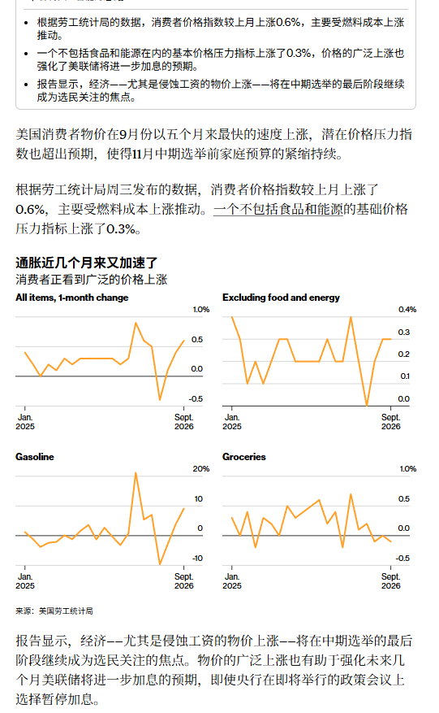
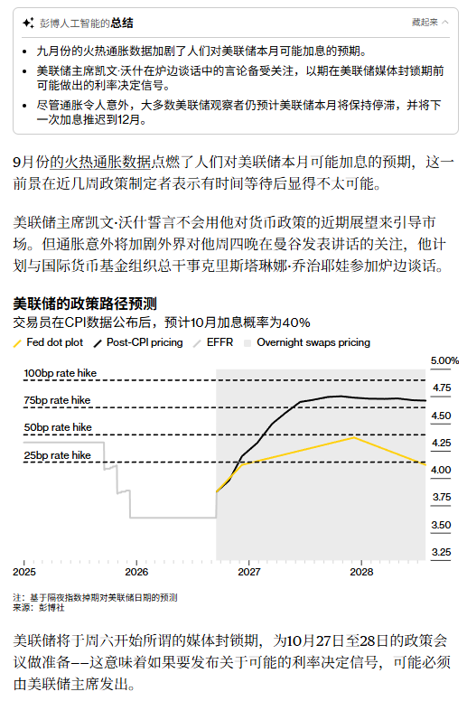
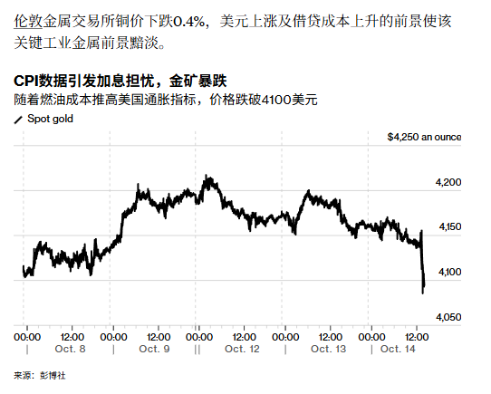
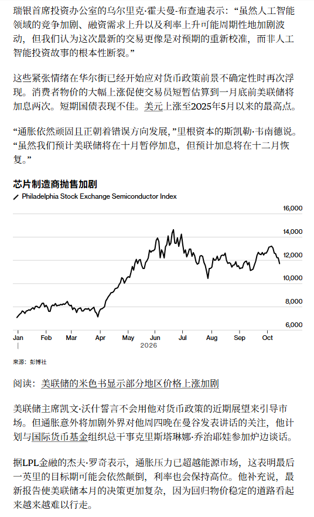
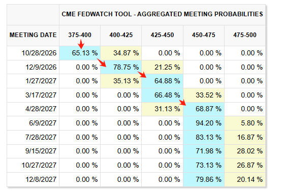
背景与关键数据
- CPI 同比 3.7%、核心 CPI 2.6%：美联储目标是 2%。3.7% 的 headline 离目标很远，主要是能源；核心 2.6% 看似温和，但环比 0.3% 的月度涨幅年化就是 3.6%，所以市场更在意"环比加速"。
- 汽油环比 +9.1%：背景是 2026 年 3 月爆发的伊朗战争（美伊冲突）推高油价，之后霍尔木兹海峡持续受扰（见帖 6）。汽油是美国人感受最直接的物价，也是中期选举（11 月）的政治敏感点。
- 加息概率 20% → 55% → 40%：这是用联邦基金期货反推出来的市场定价。当前联邦基金目标区间 3.75%–4.00%——美联储在 2025 年降了三次息，2026 年 9 月刚刚加了一次，现在市场争论的是 10 月还是 12 月再加。
- 2 年期国债收益率 4.95%：2 年期最能反映"市场认为未来两年政策利率的平均水平"，一天跳 16 个基点是很大的动作。5 年期回到 2007 年水平、美元指数回到 2025 年 5 月以来最高（见帖 22）。
- 纳斯达克 100 -2%、芯片股领跌：高估值成长股对利率最敏感。
图片解读
- 图 1（四宫格，美国劳工统计局数据，2025.1–2026.9 月环比）：总 CPI 环比升至 0.6%，五个月最快；核心（剔除食品能源）0.3%；汽油接近 +9%（上一次尖峰是 3 月的 +20%）；食品杂货略为负值——通胀是"能源单项驱动"，不是全面涨价。
- 图 2（美联储政策路径预测）：黄线是美联储自己的点阵图（预计 2027 年升到约 4.3% 后回落），黑线是 CPI 公布后的市场定价（一路升到 4.6%–4.7%，相当于再加 75 个基点），灰色阶梯是实际有效联邦基金利率（EFFR，目前约 3.9%）。市场比美联储更鹰。文字部分提到主席凯文·沃什（Kevin Warsh）周四晚在曼谷与 IMF 总裁格奥尔基耶娃炉边谈话，周六起进入 10 月 27–28 日会议前的"媒体封锁期"——这是会前最后的表态窗口。
- 图 3（现货黄金）：10 月 8 日以来在 4,100–4,250 美元震荡，CPI 公布后瞬间从约 4,150 跳水跌破 4,100。黄金不生息，加息预期上升 = 持有黄金的机会成本上升。LME 铜也跌 0.4%。
- 图 4（费城半导体指数 SOX）：从 1 月约 6,500 点涨到 7 月约 14,000 点（翻倍），现在回到约 11,500。瑞银 CIO 的说法是"对预期的重新校准，而非 AI 投资故事的根本破裂"；里根资本的评论是"通胀顽固且朝着错误方向"。
- 图 5（CME FedWatch 会议概率表）：按目标区间（基点）列出每次会议的概率分布。10/28：维持 3.75–4.00 的概率 65%，加息到 4.00–4.25 为 35%；12/9：4.00–4.25 占 78.75%（即到年底至少加一次几乎是共识）；2027/1/27：4.25–4.50 占 64.88%；2027/4/28：4.50–4.75 占 68.87%；2027/6/9：4.50–4.75 占 94.2%。市场定价未来 8 个月再加三次息。红箭头是 Jason 标注的"最可能路径"。
为什么重要 / 对市场和经济的含义
- 这是今天所有帖子的"美国侧主线"：油价 → CPI → 加息预期 → 美元走强 + 美债收益率上升 → 风险资产回调。帖 10（花旗）、帖 22（国联民生谈美元 103）、帖 16（港元承压）都是这条链的下游。
- 对 A 股 / 港股投资者：美元走强、美债收益率上升意味着外资回流美国、港元流动性收紧（帖 16），对港股估值是双重压力。
- 对黄金：短线逻辑是"实际利率上升压制金价"，但中长期的地缘和去美元化逻辑（帖 7）没变。
延伸知识
- FedWatch 概率怎么来的：CME 用 30 天联邦基金期货价格反推。期货价 = 100 - 市场预期的平均利率。如果 11 月期货隐含利率是 3.96%，而现在是 3.88%，差的 8 个基点 ÷ 25 个基点 ≈ 32% 的加息概率。它是"市场定价"，不是"预测"，会随每个数据跳动。
- 媒体封锁期（Blackout Period）：FOMC 会议前约 10 天，所有美联储官员不得公开谈论货币政策。所以封锁期前最后的讲话（这次是沃什周四在曼谷）往往被市场当作"官方剧透"。
帖 3 · 12:37 · 财通：中国 9 月 CPI 0.9%、PPI 5%，剪刀差再走扩
中国的通胀是"上游热、下游冷"：工厂进货价涨 5%，卖给消费者的价格只涨 0.9%，中间 4 个百分点的差额就是企业被挤掉的利润。读全文收起
帖子原文
财通： 中国 9 月 CPI 同比上涨 0.9%，低于预期，PPI 上涨 5%，高于预期。 PPI-CPI 差再次走扩，企业利润率压力加大。若油价持续高位运行，PPI 年内高点存在后移可能。 #经济数据#
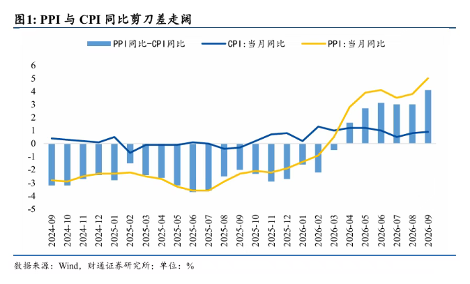
背景与关键数据
- CPI（消费者价格指数）0.9%：衡量老百姓买东西的价格。0.9% 低于预期的 1.0%，说明终端需求弱，企业涨不动价。
- PPI（生产者价格指数）5%：衡量工厂出厂价 / 原材料价格。5% 高于预期的 4.4%，主要是油价、有色金属等输入性成本推上去的（见帖 5、帖 14）。
- PPI-CPI 剪刀差 4.1 个百分点：上游成本涨得比下游售价快，中游制造企业两头受压。2021 年中国也出现过类似情况（PPI 冲到 13%、CPI 1% 左右），当时中下游制造业利润被大幅压缩。
- 这组数据同时触发了摩根士丹利"通胀回升是幻象"的报告（帖 5）和中金的剪刀差分析（帖 14）。
图片解读
财通的柱线图（2024-09 到 2026-09）：黄线 PPI 同比从 2025 年 7 月的低点约 -3.6% 一路爬升，2026 年 3 月转正后加速，9 月达到 5%；深蓝线 CPI 始终在 0–1% 之间波动；蓝柱是两者之差，2026 年 3 月之前为负（通缩期 PPI 比 CPI 更弱），之后转正并逐月走扩到 4.1。PPI 斜率明显陡于 CPI，剪刀差还在扩大趋势中。
为什么重要 / 对市场和经济的含义
- 市场之前期待的"再通胀交易"（PPI 转正 = 企业盈利改善）正在被证伪：这轮 PPI 上涨不是需求拉动，而是成本推动，对多数企业是坏事。
- 对 A 股行业：利好上游资源（石油、有色、煤炭），利空中游制造和下游消费。
- 对货币政策：名义上 PPI 5% 似乎不该降息，但 CPI 0.9% 和内需疲弱又需要宽松——央行的两难。
延伸知识
- 剪刀差为什么叫"利润分配指标"：一件商品的价格链是"原材料 → 工厂 → 零售"。PPI 涨而 CPI 不涨，意味着涨价停在了工厂这一环，没传导到消费者，中间环节自己消化成本。所以看 PPI-CPI 剪刀差 ≈ 看上游 vs 中下游的利润此消彼长。
- 成本推动型通胀 vs 需求拉动型通胀：前者像 1970 年代石油危机，涨价伴随经济停滞（滞胀）；后者像经济过热，涨价伴随高增长。央行对前者基本无能为力——加息压不住油价，只会把需求打得更弱。
帖 4 · 12:48 · 摩根士丹利：台湾今年 GDP 增长或达 11.5%，四十年最高
AI 超级周期让台湾成为全球增长最快的发达经济体之一，11.5% 是 1980 年代以来的最高增速，连央行都要因此加息。读全文收起
帖子原文
摩根斯坦利： 中国台湾今年 GDP 增长或达 11.5%，在强劲科技出口（AI 红利）以及消费支持政策的共同推动下，经济增长韧性将持续至 2027 年。 #经济数据#
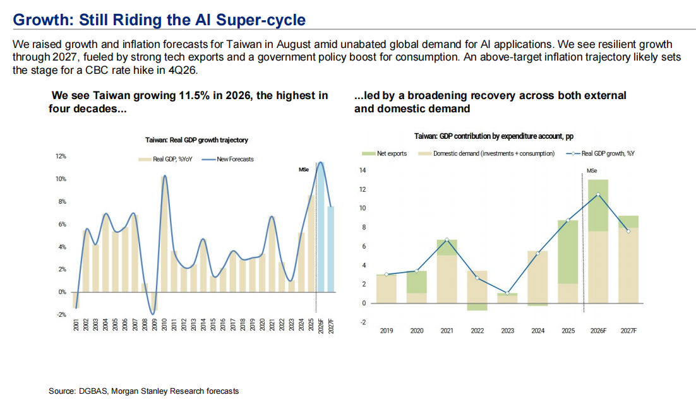
背景与关键数据
- 11.5%：对一个人均 GDP 超过 3 万美元的经济体来说是惊人的数字。驱动力是台积电等半导体企业的 AI 芯片出口、服务器代工（广达、纬创、鸿海）出口。
- "消费支持政策"：台湾当局发放现金 / 消费补贴，把出口红利往内需引导。
- 央行（CBC）4Q26 加息：通胀高于目标，摩根士丹利预计台湾央行四季度加息——和美联储同向。
图片解读
- 左图（实际 GDP 增速 2001–2027F）：历史上只有 2010 年（金融危机后反弹）接近 10%，2021 年约 6.6%。2026F 的 11.5%（浅蓝柱）是四十年最高，2027F 回落到约 7.5% 但仍然很高。
- 右图（支出法贡献分解）：绿色是净出口贡献，米色是国内需求（投资 + 消费）。2026F 两者都大幅扩张：国内需求贡献约 7.5 个百分点（AI 相关资本开支 + 消费补贴），净出口约 5.5 个百分点。2027F 净出口贡献收窄，国内需求仍是主力——摩根士丹利说的"广泛复苏"指的就是这个。
为什么重要 / 对市场和经济的含义
- 与帖 9 中国出口数据对照：中美 AI 需求同时拉动东亚供应链，中国 9 月 ADP（自动数据处理设备）出口 +6.3%、集成电路 +1.9%，台湾是上游。
- 风险在帖 2：SOX 指数已从高点回落 18%，如果 AI 资本开支预期降温，台湾这种"单一引擎"经济体的波动会很大。
- 帖 6 中提到台湾承诺购买阿拉斯加 LNG 700–800 亿美元，也可以理解为用贸易顺差换取美国的政治 / 能源安全保障。
延伸知识
- GDP 支出法贡献分解：GDP = 消费 + 投资 + 政府支出 + 净出口。"贡献率"是每一项的增量占 GDP 增量的比重，"拉动"是贡献率 × GDP 增速。右图的柱子高度就是拉动百分点，加起来等于 GDP 增速。
- 荷兰病风险：单一出口部门过度繁荣会推高汇率和工资，挤压其他产业。台湾现在的"AI 一枝独秀"值得关注这一点。
帖 5 · 12:53 · 摩根士丹利：《中国通胀回升的幻象——输入型通胀正在加剧》
PPI 涨到 5% 不代表中国走出通缩，这是外部油价"征的税"，不是国内需求复苏；2027 年大概率重回通缩。读全文收起
帖子原文
摩根斯坦利： 《中国通胀回升的幻象——输入型通胀正在加剧》，输入型通胀不等于可持续的再通胀。 如果没有国内需求的恢复，外部成本上涨只能带来价格水平的一次性抬升（被征税），真正持续的再通胀，需要企业具备持续提高售价的能力，而这种能力通常离不开较强的需求、收入增长和更广泛的价格传导。因此，2027 年通胀可能再度放缓。近期政策能够为经济增长提供一定支撑，但在我们看来，还不足以打破顺周期紧缩和去杠杆陷阱。 #经济数据#
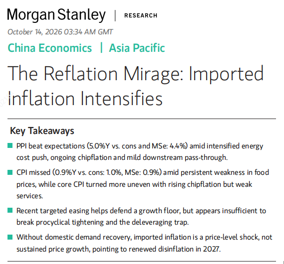
背景与关键数据
- "价格水平的一次性抬升" vs "持续通胀"：油价从 70 涨到 100，所有东西涨一轮就停了，同比数据一年后自动归零；真正的通胀是工资涨 → 需求涨 → 企业敢涨价 → 再推高工资的螺旋。
- "被征税"：进口能源涨价相当于全体中国企业和居民向产油国交了一笔税，减少的是国内购买力。
- "顺周期紧缩和去杠杆陷阱"：经济差 → 企业和居民不借钱 → 需求更差 → 更不敢借钱。这是帖 1 数据的理论解释。
- "chipflation"（芯片通胀）：报告里提到 AI 需求推高芯片和电子元件价格，是 PPI 的另一个推手。
图片解读
摩根士丹利报告首页（2026-10-14 03:34 GMT），四条要点：(1) PPI 5.0% 超预期（共识和 MS 预测均为 4.4%），原因是能源成本推动、芯片通胀和温和的下游传导；(2) CPI 0.9% 低于共识的 1.0%，食品价格持续疲弱，核心 CPI 内部分化——芯片相关涨、服务弱；(3) 近期定向宽松能守住增长底线，但不足以打破顺周期紧缩和去杠杆陷阱；(4) 没有内需复苏，输入型通胀是价格水平冲击而非持续涨价，指向 2027 年重新通缩。
为什么重要 / 对市场和经济的含义
- 这是对"再通胀交易"的直接泼冷水：不要因为 PPI 转正就买周期股。
- 对债券：如果 2027 年通缩回归，中国国债收益率仍有下行空间。
- 对政策预期：摩根士丹利的潜台词是，当前政策力度不够，需要更大的需求侧刺激（见帖 18 IMF 报告关于社保、收入分配的讨论）。
延伸知识
- 费雪的债务通缩螺旋（Debt Deflation）：1933 年欧文·费雪提出——物价下跌使实际债务负担上升，债务人被迫抛售资产 / 削减支出还债，导致物价进一步下跌。"去杠杆陷阱"就是这个概念的现代版。打破它的办法历史上只有两个：通胀（稀释债务）或债务减免 / 重组（见帖 19 城投非标的例子）。
- 输入型通胀的日本案例：2022 年日本 CPI 冲到 4%，日元贬值 + 能源进口价格推动，日本央行坚持认为是"暂时的"，直到工资谈判（春斗）连续两年涨 5% 以上才承认通胀持续——判断标准正是"工资-物价螺旋是否形成"。
帖 6 · 12:58 · ZeroHedge：伊朗加大霍尔木兹海峡攻击，胡塞袭扰沙特，特朗普宣布格陵兰勘探
中东冲突进入"战争消耗战"阶段：伊朗用水雷和袭船把霍尔木兹变成禁区，胡塞用导弹打利雅得，美国和海湾国家则在找绕开海峡的替代路线——这是油价站稳 100 美元以上的根本原因。读全文收起
帖子原文
zerohedge： 伊朗显然加大了对霍尔木兹海峡商业航运的攻击力度，试图在 11 月中期选举前给特朗普制造不确定性和经济混乱；胡塞武装也在竭力干扰沙特。特朗普则周三宣布了对格陵兰的能源勘探计划。 #其他国家经济#
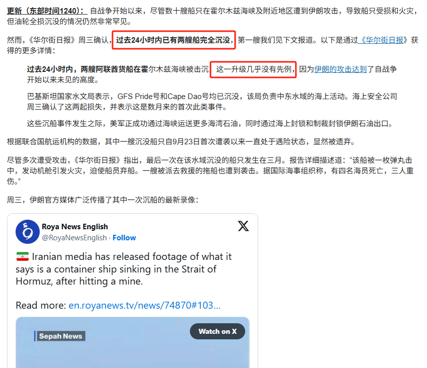
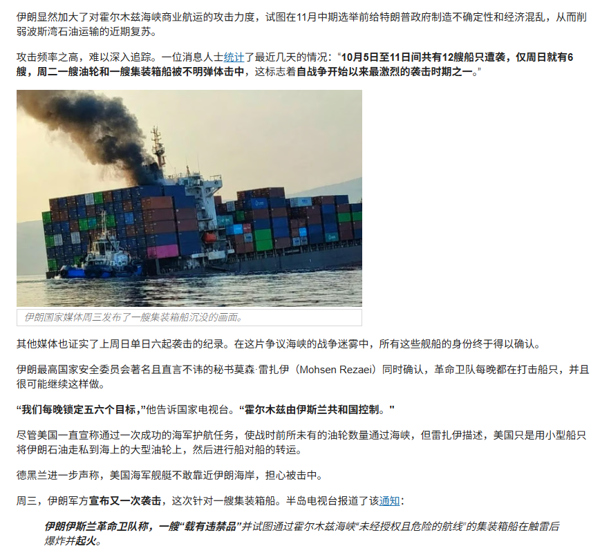
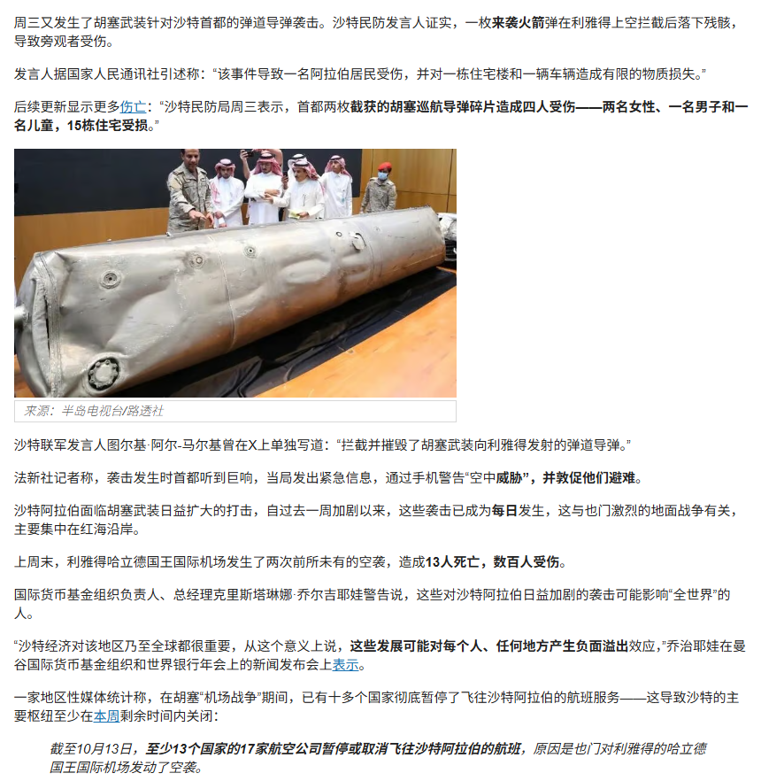
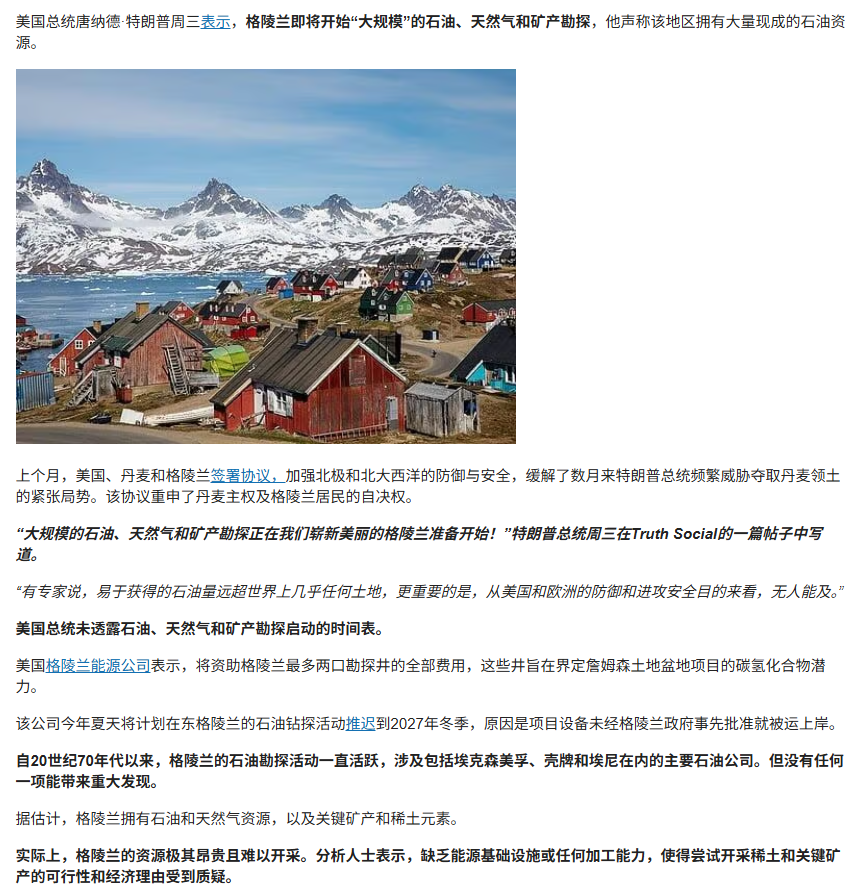
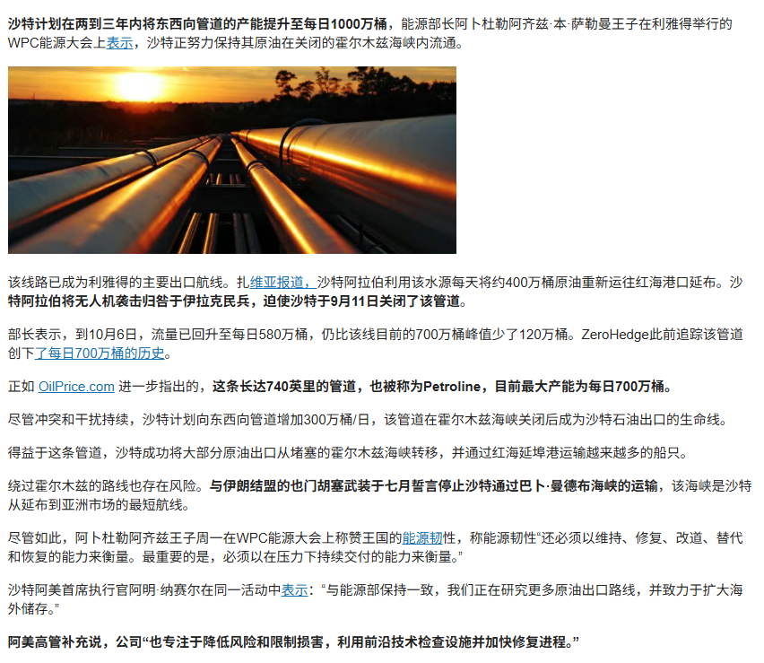
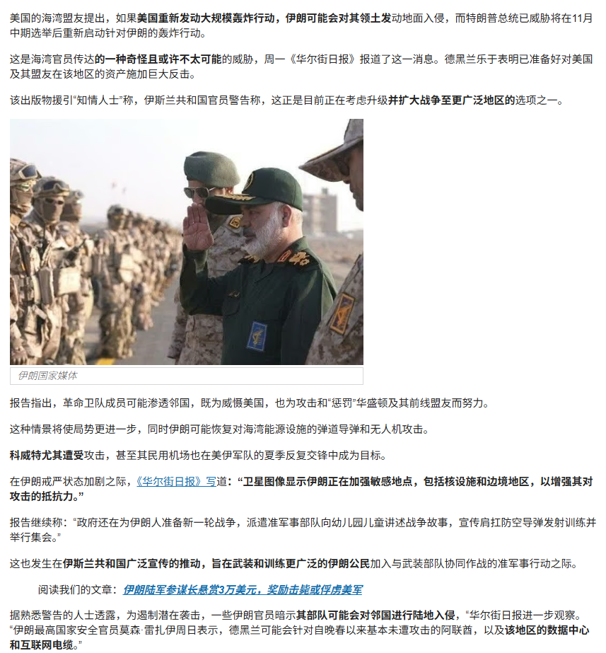
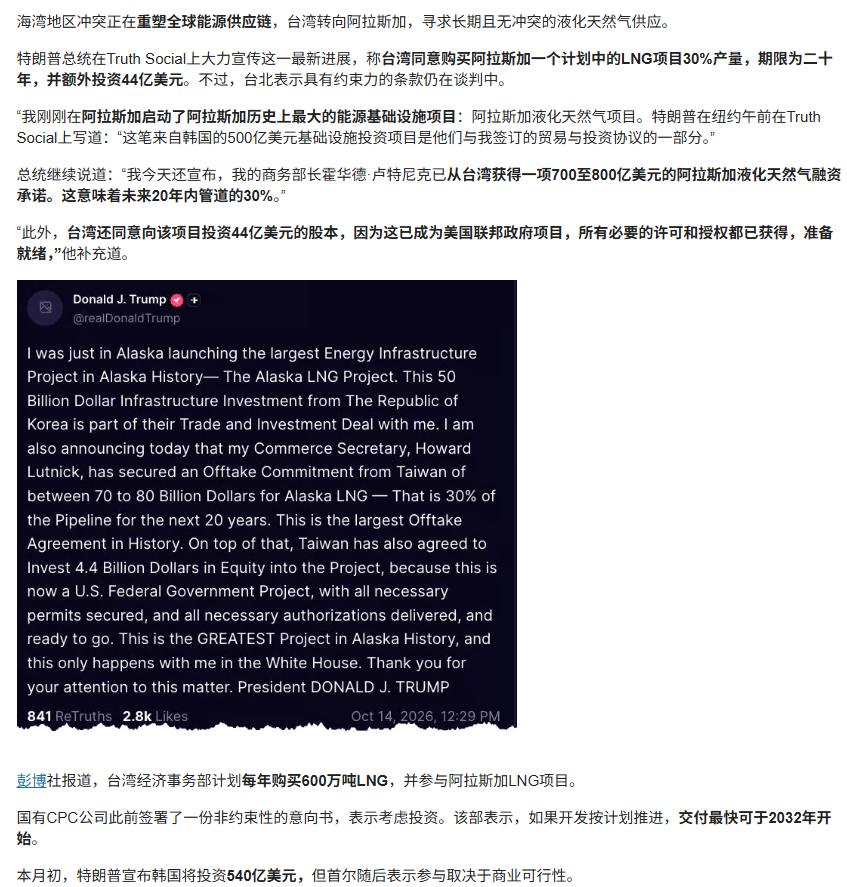
背景与关键数据
- 霍尔木兹海峡：波斯湾唯一出口，正常年份全球约 20% 的石油和 25% 的 LNG 经此运输。2026 年 3 月美伊战争爆发后，海峡事实上处于"半封闭"状态，美军靠护航和小船转驳维持部分流量。
- 10 月 5–11 日 12 艘船遇袭、24 小时内两艘沉没：自战争开始以来，船只受袭常见，但"完全沉没"极罕见（上一次是 3 月）。升级信号明确。
- 胡塞武装：也门什叶派武装，伊朗盟友，控制红海南端曼德海峡一侧。现在把打击目标从红海航运扩展到沙特本土（利雅得机场、首都），13 国 17 家航空公司停飞沙特。
- 沙特东西管道（Petroline）：从东部油田到红海延布港，长 740 英里，是绕开霍尔木兹的生命线。目前最大 700 万桶/日，计划 2–3 年内扩到 1,000 万桶/日。但 9 月 11 日被伊拉克民兵无人机炸停，10 月 6 日才恢复到 580 万桶/日。
- 格陵兰：特朗普宣布"大规模"油气矿产勘探。上月美国-丹麦-格陵兰刚签协议缓和了"夺取格陵兰"的紧张。但 1970 年代以来埃克森、壳牌、埃尼都勘探过，没有重大发现；缺乏基础设施，开采成本极高。
- 台湾买阿拉斯加 LNG：商务部长卢特尼克宣布台湾承诺 20 年购买 700–800 亿美元（管道产能的 30%）+ 44 亿美元股权投资；韩国投资 500 亿美元基础设施。但台湾 CPC 签的是"不具约束力的意向书"，最早 2032 年才能交付。
图片解读
- 图 1（WSJ 确认两船沉没）：GFS Pride 和 Cape Dao 两艘阿联酋货船在海峡沉没，巴基斯坦海事机构确认。其中一艘自 9 月 23 日被袭后一直处于遇险状态被遗弃。伊朗官媒发布集装箱船触雷沉没的视频（Roya News 转发）。
- 图 2（袭击频率统计）：10 月 5–11 日 12 艘船遇袭，周日一天 6 艘。革命卫队秘书雷扎伊（Mohsen Rezaei）公开说"我们每晚锁定五六个目标""霍尔木兹由伊斯兰共和国控制"；并嘲讽美国只能用小船把伊朗石油转驳到大油轮。图片是一艘冒黑烟倾斜的集装箱船。
- 图 3（胡塞袭击利雅得）：沙特展示被拦截的胡塞弹道导弹残骸；碎片致 4 人受伤、15 栋住宅受损；上周末哈立德国王机场两次空袭致 13 人死亡。IMF 总裁警告"对沙特的袭击可能影响全世界"。
- 图 4（格陵兰）：特朗普 Truth Social 宣布勘探；格陵兰能源公司资助詹姆森地盆地最多两口探井，钻探推迟到 2027 年冬季。文章明确指出：资源昂贵、难开采，经济性受质疑。配图是格陵兰小镇风景。
- 图 5（沙特东西管道）：能源部长在 WPC 能源大会宣布扩产计划；阿美 CEO 纳赛尔说正在研究更多出口路线、扩大海外储存。但绕行红海也有风险——胡塞 7 月曾誓言切断沙特经曼德海峡的运输。
- 图 6（伊朗威胁地面入侵）：海湾官员警告，如果美国在中期选举后重启大规模轰炸（特朗普已威胁），伊朗可能对邻国发动地面入侵；革命卫队可能渗透邻国；科威特已多次遭袭；卫星图显示伊朗在加固核设施；伊朗军方悬赏 3 万美元击毙或俘虏美军；雷扎伊威胁打击阿联酋的数据中心和海底互联网电缆。
- 图 7（台湾-阿拉斯加 LNG）：特朗普帖子全文（"史上最大承购协议"）；彭博补充台湾计划每年购买 600 万吨 LNG；韩国 540 亿美元投资"取决于商业可行性"。
为什么重要 / 对市场和经济的含义
- 油价是今天中美两边通胀故事的共同变量：美国汽油 +9.1%（帖 2）、中国 PPI 5%（帖 3、14）都是它的产物。只要海峡不恢复，100 美元以上的油价就是常态。
- 中期选举前的博弈：伊朗的算盘是用油价和混乱给特朗普施压；特朗普的回应是威胁选后重启轰炸 + 推"能源自主"叙事（格陵兰、阿拉斯加）。选举结果可能是地缘风险的下一个拐点。
- 对资产：利多能源、航运（运价）、军工；利空航空、化工、以及所有依赖中东能源的亚洲制造业（中日韩台）。台湾、韩国被迫签 LNG 大单，就是"能源安全溢价"的体现。
延伸知识
- "能源安全溢价"与长协：LNG 长期承购协议（offtake）通常 15–20 年，买方锁定供应，卖方锁定融资。阿拉斯加 LNG 项目规划了十几年一直找不到买家（成本太高），这次靠地缘和关税压力促成——经济上未必划算，政治上是"保护费"。
- 海上保险与航运中断：战争险保费是航运中断的第一道经济传导。当保费从货值的 0.1% 升到 1% 以上，船东宁可绕行好望角（多 10–14 天）。这也是为什么沙特宁可花钱扩管道也要绕开海峡。
帖 7 · 13:03 · 彭博：赞比亚铜出口将部分用人民币结算
非洲第二大铜出口国要用人民币卖铜，这是人民币国际化在大宗商品领域又一个落地案例。读全文收起
帖子原文
bloomberg： 赞比亚表示，中国铜出口买家将从明年开始以人民币支付部分金属购买费用。中国的非洲影响力在扩大。 #金融#
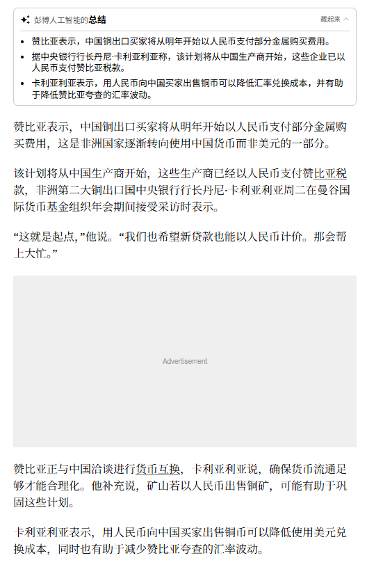
背景与关键数据
- 赞比亚：非洲第二大铜出口国（仅次于刚果金），铜占出口 70% 以上，中国是最大买家，中资企业（中色集团等）在当地有大量矿山。
- 从中国生产商开始：这些中资矿企已经用人民币缴纳赞比亚税款，所以从他们开始用人民币结算铜出口是顺理成章的。
- 货币互换谈判：赞比亚央行行长卡利亚利亚在 IMF 年会（曼谷）表示正与中国谈货币互换，并希望"新贷款也以人民币计价"。
- 动机：减少美元兑换成本、降低克瓦查（赞比亚货币）汇率波动。
图片解读
彭博中文报道截图，含 AI 摘要三要点：(1) 中国铜买家明年起部分用人民币付款；(2) 从已用人民币缴税的中国生产商开始；(3) 可降低汇兑成本和克瓦查波动。文中引用行长原话"这就是起点"。
为什么重要 / 对市场和经济的含义
- 与帖 2、帖 22 的"强美元"形成对照：美元越强、美债收益率越高，新兴市场借美元的成本越高，去美元化的动力反而越强。
- 铜是中国进口量最大的工业金属之一，用人民币买铜意味着中国的贸易顺差（帖 9、13）可以不再全部换成美元资产。
- 对铜价本身影响不大，但对人民币离岸流动性和中国在非洲的金融基础设施（CIPS 跨境支付系统）是实质进展。
延伸知识
- 货币互换（Currency Swap）：两国央行约定互相提供本币额度，比如中国给赞比亚人民币、赞比亚给中国克瓦查。赞比亚企业需要人民币买中国货时，可以从本国央行拿人民币，不用先换美元。中国央行目前与 40 多个国家签了互换协议，总额超过 4 万亿元。
- 大宗商品计价权：石油用美元计价（"石油美元"）是美元霸权的支柱之一。人民币在铁矿石（与巴西淡水河谷）、原油（上海原油期货）、现在是铜上逐步渗透，每一步都很小，但方向一致。
帖 8 · 13:08 · 南风窗：内卷变负卷
"内卷"至少还在做加法（边际收益递减但为正），"负卷"是主动接受亏损只为消灭对手——这是中国很多行业（新能源车、光伏、外卖）当下的真实状态。读全文收起
帖子原文
南风窗： 资本太多、利润太少，内卷变成了负卷，却又不得不被迫参与。 #经济数据#
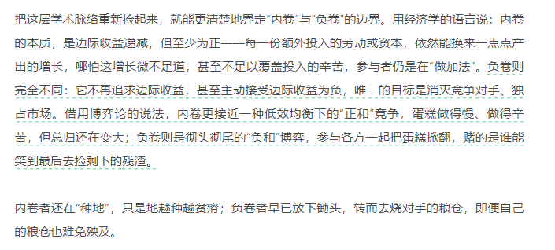
背景与关键数据
- 文章用经济学语言区分两个概念：
- 内卷：边际收益递减但仍为正。每多投入一份劳动或资本，还能换来一点产出增长，哪怕不够覆盖辛苦。博弈论上是"低效均衡下的正和竞争"——蛋糕做得慢、做得辛苦，但还在变大。
- 负卷：主动接受边际收益为负，唯一目标是消灭对手、独占市场。是"负和博弈"——参与各方一起把蛋糕掀翻，赌的是谁能笑到最后捡残渣。
- 比喻："内卷者还在种地，只是地越种越贫瘠；负卷者早已放下锄头，转而去烧对手的粮仓，即便自己的粮仓也难免殃及。"
图片解读
南风窗文章正文截图，两段核心论述（见上）。
为什么重要 / 对市场和经济的含义
- 这是帖 20 中金"增收不增利"的微观机制：出口创纪录（帖 9）但上市公司 ROE 远低于美股，因为价格战把利润率打没了。
- 也是帖 3 剪刀差的另一面：企业不是不想涨价，是不敢涨——一涨价市场份额就没了。
- 政策层面"反内卷"（2025 年起的产能治理、价格法修订）就是要把"负卷"拉回"内卷"，这是 PPI 转正的国内因素之一。
延伸知识
- 囚徒困境与价格战：每家企业单独看，降价都是最优策略（不降就丢份额），但所有人都降价的结果是全行业亏损。打破囚徒困境需要外部协调——要么龙头企业默契（可能被反垄断），要么政府出手限产（"反内卷"）。
- 日本 1990 年代的"过当竞争"（過当競争）：日本泡沫破裂后也出现类似情况，大量"僵尸企业"靠银行续贷不退出，行业产能过剩、价格战持续十年。解法是 2000 年代小泉改革强制处理不良债权，让僵尸企业退出——这一点帖 20 中金的日本对比图也提到了（2003 年"结构性改革"）。
帖 9 · 13:13 · JPM：中国 9 月出口超预期，顺差创纪录但含价格效应
出口是中国经济现在唯一的亮点：9 月出口同比 +36%、顺差 1,335 亿美元、全年奔 1.4 万亿美元，但很大一部分是"涨价"而非"多卖"。读全文收起
帖子原文
JPM： 9 月中国出口季调环比增长 6.6%，进口增长 3.1%，均明显超出预期，但名义增长受到价格因素放大。出口增长更加广泛。 科技产品、汽车继续领先，低端消费品出口也出现明显反弹。贸易顺差创纪录，并不自动意味着实际 GDP 中的净出口贡献同样创纪录，因为贸易金额包含价格变动，而实际 GDP 必须排除价格因素。全年贸易顺差可能达到 1.4 万亿美元，将比 2025 年约 1.2 万亿美元增加约 2,000 亿美元。 9 月份对欧盟出口季调环比增长 11%，同比增长 25.3%，明显高于 8 月的同比 6.6%。这意味着中国对欧出口需求在 9 月份明显增强。 #经济数据#
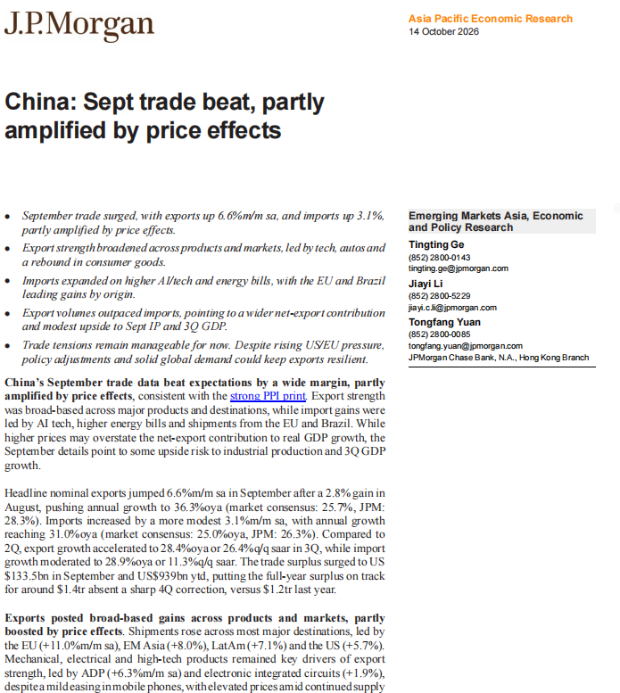
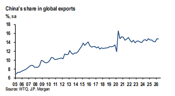
背景与关键数据
- 出口同比 36.3%（共识 25.7%）、进口 31.0%（共识 25.0%）：这么高的同比一部分是去年基数低，一部分是价格（PPI 5%、全球通胀）。JPM 特意提醒"名义增长被价格放大"。
- 9 月顺差 1,335 亿美元，年初至今 9,390 亿美元：全年 1.4 万亿美元将是人类历史上任何国家最大的年度贸易顺差（德国巅峰约 3,000 亿、日本约 1,500 亿）。
- 对欧出口环比 +11%、同比 +25.3%：在美国关税压力下，中国出口转向欧洲，这也是欧盟近期贸易摩擦升温的背景。
- 结构：机电、高科技产品领先——ADP（自动数据处理设备，即服务器 / 电脑）+6.3%、集成电路 +1.9%；汽车继续强；低端消费品反弹。
- "顺差创纪录 ≠ 净出口贡献创纪录"：GDP 核算用的是实际量（剔除价格），如果出口价格涨 10% 但数量只涨 2%，对实际 GDP 的贡献只有 2%。
图片解读
- 图 1（JPM 报告首页）：五条要点：出口环比 +6.6%、进口 +3.1%，部分被价格放大；出口在产品和市场上广泛走强；进口增长来自 AI 科技、能源账单上升、欧盟和巴西；出口量超过进口量，指向更大的净出口贡献和 9 月工业增加值 / 三季度 GDP 上行风险；贸易紧张暂时可控。分市场：欧盟 +11.0%、新兴亚洲 +8.0%、拉美 +7.1%、美国 +5.7%（环比季调）。
- 图 2（中国占全球出口份额，WTO 数据）：从 2005 年的 7% 稳步升到 2015 年前后的 13%，2020 年疫情期间一度冲到 16%（全球只有中国能生产），之后回落到 14%–15% 区间并稳定至 2026 年。关税战没有压低中国份额。
为什么重要 / 对市场和经济的含义
- 与帖 1 对照：内需（信贷）塌方，外需撑着，这就是 Robin Brooks 在帖 13 说的"出口是唯一引擎"。
- 1.4 万亿美元顺差会带来两个问题：(1) 贸易伙伴的政治反弹（欧盟已在准备反制）；(2) 顺差换成美元资产的压力——帖 7 的人民币结算就是分流办法之一。
- 对人民币：巨额顺差 + 美元走强，人民币大概率维持"对美元稳、对一篮子升"。
延伸知识
- 全球失衡（Global Imbalances）：2000 年代中国 + 石油国顺差、美国逆差的格局被认为是 2008 年危机的远因之一（"储蓄过剩"压低了美国利率）。现在中国顺差占全球 GDP 比重比 2007 年更高，这是国际政治经济学里最大的结构性张力。
- 贸易条件（Terms of Trade）：出口价格 ÷ 进口价格。中国现在出口价涨（制成品）、进口价也涨（能源），贸易条件变化不大，但对日韩台这种能源进口国来说是恶化。
帖 10 · 13:33 · 花旗：核心 CPI 环比 0.33%，10 月暂停但 12 月加息
华尔街主流看法：10 月不动、12 月加 25 个基点；但花旗仍然"嘴硬"认为通胀会放缓，Jason 用红框标出了这句话。读全文收起
帖子原文
花旗： 美国 9 月份核心 CPI 环比上涨 0.33%，显著高于我们的预测和市场一致预期。我们预计官员将在 10 月份暂停加息，但会明确释放 12 月份再加息 25 个基点的强烈信号。尽管核心通胀已经连续两个月超出预期，但多项基础通胀指标仍然比较温和，因此我们继续预计未来几个月通胀将逐渐放缓。 #其他国家经济#
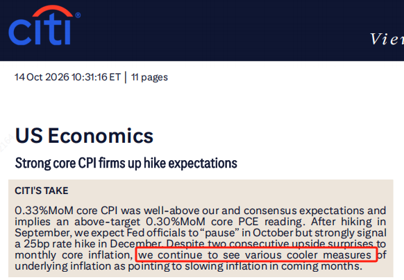
背景与关键数据
- 核心 CPI 环比 0.33%：年化约 4%。连续两个月超预期。
- 隐含核心 PCE 0.30%：PCE 是美联储真正盯的指标（权重和 CPI 不同，医疗占比更高、住房占比更低），0.30% 的月度也高于 2% 目标对应的 0.17%。
- "基础通胀指标温和"：指截尾均值 CPI（trimmed-mean）、中位数 CPI、粘性价格 CPI 等剔除极端项的指标——它们没有 headline 那么热，所以花旗认为涨价集中在少数项目（能源及其传导），会自然消退。
- 这和帖 2 彭博的描述一致：市场定价 40% 的 10 月加息概率，但分析师共识是 12 月。
图片解读
花旗《US Economics》报告头部（2026-10-14 10:31 ET，11 页），标题"强劲核心 CPI 巩固加息预期"。Jason 红框标注的句子："我们继续看到多项基础通胀的较冷指标表明未来几个月通胀将放缓"——可以理解为他在质疑：连续两个月超预期了还在说会放缓？
为什么重要 / 对市场和经济的含义
- 卖方的"通胀会放缓"预期和市场的"再加三次"定价（帖 2 图 5）之间有明显分歧。如果花旗对，美债和黄金现在是买点；如果市场对，美元和美债收益率还有上行空间。
- 对美股：12 月加息已被定价，真正的风险是 10 月就加（40% 概率）或美联储暗示更多次加息。
延伸知识
- CPI vs PCE：CPI 由劳工统计局编制，基于城市消费者的购物篮；PCE 由经济分析局编制，涵盖所有居民消费（包括雇主代付的医保）。PCE 允许替代效应（牛肉贵了买鸡肉），所以通常比 CPI 低 0.3–0.5 个百分点。美联储 2000 年起正式以 PCE 为目标。
- "超级核心"（Supercore）：剔除住房的核心服务通胀，被认为最能反映工资压力。如果超级核心也热，加息就很难停。
帖 11 · 14:01 · 财新：2027 国考招录 35,691 人，税务占 67%
国考总招录连续两年下降，但三分之二的岗位给了税务系统——财政压力下"收税"是扩编的唯一方向。读全文收起
帖子原文
财新： 2027 年全国拟招募公务员总计 35691 人， 其中，税务系统：24013 人，占比 67.28% #TAX#
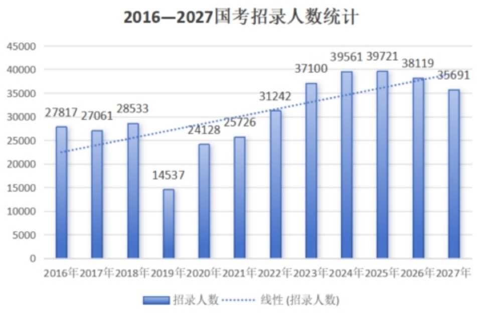
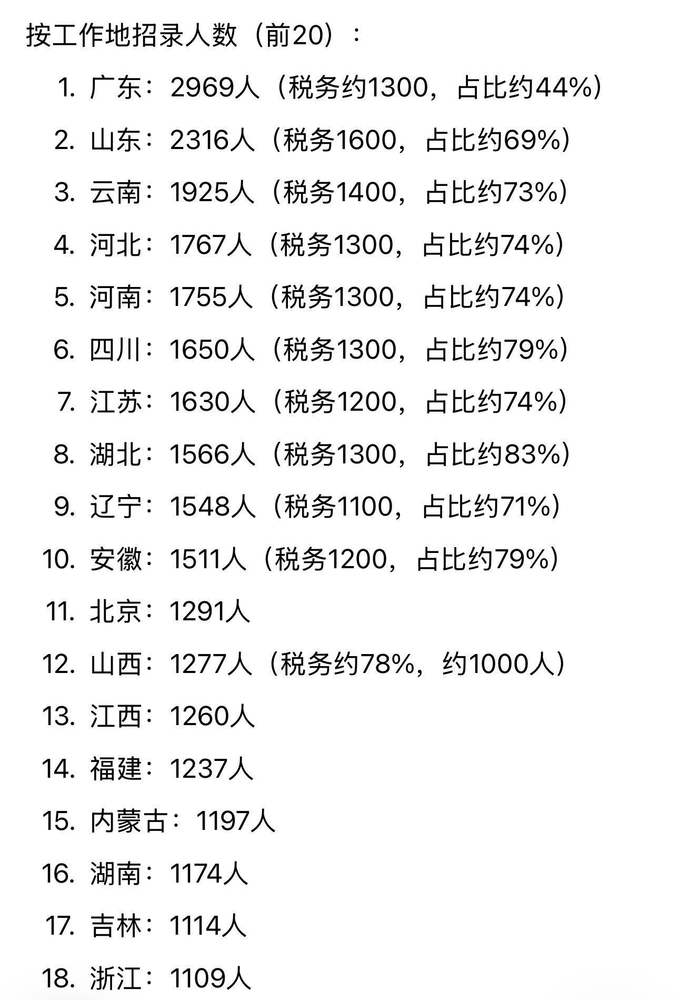
背景与关键数据
- 35,691 人：比 2026 年的 38,119 少 2,428 人，比 2025 年峰值 39,721 少 4,000 多。公务员扩招在财政紧张下也开始收缩。
- 税务 24,013 人（67.28%）：税务系统是国考招录大户历来如此（基层税务所分布广），但 67% 是历史高位。结合 2025–26 年"金税四期"上线、税务稽查加强、地方财政收入下滑，这个比例有明显的政策含义。
- Jason 用 #TAX# 标签归类——他有一个长期跟踪"税收 / 财政"主题的系列。
图片解读
- 图 1（2016–2027 国考招录人数柱状图）：2016–2018 在 2.7–2.9 万；2019 骤降到 14,537（机构改革年）；之后逐年回升，2022 年 31,242、2023 年 37,100、2024 年 39,561、2025 年 39,721 达到峰值；2026 年 38,119、2027 年 35,691 连续两年下降。虚线是线性趋势，2027 年明显落在趋势线下方。
- 图 2（按工作地招录前 18）：广东 2,969（税务约 1,300，44%）、山东 2,316（税务 1,600，69%）、云南 1,925（73%）、河北 1,767（74%）、河南 1,755（74%）、四川 1,650（79%）、江苏 1,630（74%）、湖北 1,566（83%）、辽宁 1,548（71%）、安徽 1,511（79%）……北京 1,291、浙江 1,109 排名靠后。经济越弱的省份，税务岗位占比越高（湖北 83%、四川 79%、安徽 79%），广东只有 44%。
为什么重要 / 对市场和经济的含义
- 税务招录比例是财政压力的一个侧面指标：土地出让收入下滑后（2021 年 8.7 万亿 → 2025 年不足 4 万亿），税收征管必须补上缺口。
- 对企业：税务稽查、社保合规、个税（尤其海外收入）的执行力度会继续加强。这也是 Jason "#TAX#" 系列的核心观点。
- 对就业：国考是应届生就业的重要缓冲，总量收缩 + 岗位集中于税务，说明财政已没有余力扩大其他公共部门编制。
延伸知识
- 金税四期：2025 年起全面上线的税收征管系统，打通银行、工商、社保、海关数据，实现"以数治税"。对企业影响：两套账、私户收款、虚开发票等灰色操作的空间大幅压缩。
- 财政"三保"：保基本民生、保工资、保运转。地方财政紧张时优先级依次是这三项，税务扩编属于"保运转"中为"保收入"服务的投入。
帖 12 · 16:04 · 八卦：扒系列相关人员"喝茶"
Jason 之前写过一系列"扒"某些人物家庭背景的帖子，现在传闻其中一些当事人的子女被有关部门约谈（"喝茶"）。无图、无细节、来源为传闻。读全文收起
帖子原文
扒系列中的一些子女据说喝茶了 #八卦#
背景与关键数据
- "扒系列"应指他此前发布的深挖某些公众人物 / 官员家庭财富、海外资产的系列帖；"喝茶"是中文网络用语，指被相关部门请去谈话。
- 本帖未提供任何可核实的信息，仅作记录，不做解读。
为什么重要 / 对市场和经济的含义
- 无直接市场含义。可以视作 Jason 对自己此前"扒系列"内容后续的跟进。
延伸知识
- 此类传闻类帖子建议只记录、不传播、不作为任何判断依据。
帖 13 · 16:50 · Robin Brooks：中国不会主动放弃出口导向，这是它唯一的引擎
前 1–9 月顺差 9,400 亿美元创历史新高，Robin Brooks 的结论是：别指望中国"再平衡"，消费和投资都不行，出口是唯一能保 GDP 的东西。读全文收起
帖子原文
Robin Brooks： 中国贸易顺差依然强劲，认为中国会主动放弃出口主导模式的想法应该停止。其他两驾马车无法保持 GDP，这是它目前唯一的动力。 #经济数据#
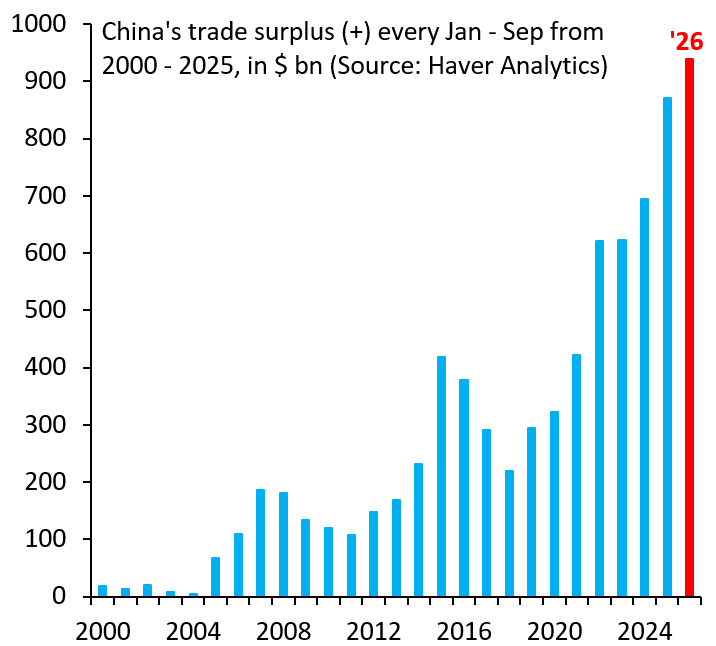
背景与关键数据
- Robin Brooks：前国际金融协会（IIF）首席经济学家、前高盛外汇策略主管，现布鲁金斯学会高级研究员，以犀利的中国贸易顺差和俄罗斯制裁评论著称。
- "三驾马车"：消费、投资、出口。帖 1 显示居民不借钱（消费弱），帖 18 表格显示民间固定资产投资 2025 年 -6.4%（投资弱），只剩出口。
- 他的话有两层含义：(1) 中国不会因为西方施压而主动压缩出口；(2) 这意味着贸易摩擦会持续升级。
图片解读
柱状图：2000–2026 年每年 1–9 月中国贸易顺差（亿美元，Haver 数据）。2000–2004 年接近 0；2007–2008 约 1,900 亿；2015 年约 4,200 亿；2016–2020 回落到 2,200–3,800 亿；2021 年 4,200 亿；2022–2023 约 6,200 亿；2024 年约 6,950 亿；2025 年约 8,700 亿；2026 年（红柱）约 9,400 亿。近五年几乎翻倍，曲线呈加速上扬。
为什么重要 / 对市场和经济的含义
- 与帖 9 JPM 的数据相互印证，但视角不同：JPM 讲数据细节，Brooks 讲政治含义——顺差这么大会招来更多关税和贸易壁垒（欧盟、新兴市场都在跟进）。
- 对汇率：如果顺差被认为是"人民币低估"的结果，汇率升值压力会以政治形式出现（类似 1985 年日本广场协议的逻辑）。
- 对国内政策：出口强让决策层对内需刺激的紧迫感下降——这正是摩根士丹利（帖 5）和中金（帖 20）担心的。
延伸知识
- 再平衡（Rebalancing）：2008 年后国际社会对中国的核心诉求——从出口 / 投资驱动转向消费驱动。2010–2019 年中国顺差占 GDP 比重确实从 10% 降到 1–2%，但 2020 年后重新扩大到 3–5%。Brooks 的意思是这一轮"再平衡"已经逆转。
- 广场协议（1985）：美国联合欧日迫使日元、马克升值以削减美国逆差。日元两年内升值一倍，日本靠宽松货币对冲，催生了资产泡沫。这是每次讨论"中国顺差 + 升值压力"时绕不开的历史参照。
帖 14 · 17:59 · 中金：上游涨价向下游传导有限，剪刀差扩大
中金把帖 3 的剪刀差再拆一层：PPI 内部"生产资料 vs 生活资料"的差距也扩大到 6.6 个百分点，低价库存用完之后，中下游的利润挤压才刚开始。读全文收起
帖子原文
中金： 随着上游价格进一步强化，生产资料与生活资料价格同比剪刀差由上月的 5.5 个百分点扩大至 6.6 个百分点，PPI 与 CPI 的剪刀差也由 3.0 个百分点扩大至 4.1 个百分点。当前价格改善仍以上游为主，向生活资料和终端产品的传导仍有限。 向前看，我们认为，短期输入性通胀压力或仍具一定韧性。10 月以来中东局势再度紧张，布伦特原油期货价格维持在 100 美元/桶以上。若油价持续高位运行，叠加有色等上游品种价格偏强，PPI 短期或继续受到支撑，CPI 能源价格亦可能维持偏强表现。不过，当前涨价仍主要集中于能源和原材料环节，食品、服务以及多数终端消费品价格表现相对温和，前期能化链低成本和社会库存有助呵护中下游利润，随着库存的逐步消化，高油价对中下游利润和终端消费的挤压或仍将进一步显现。 #经济数据#
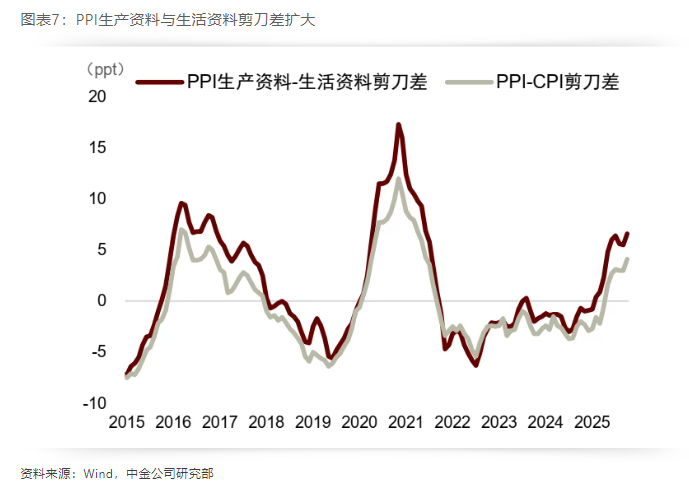
背景与关键数据
- 生产资料 vs 生活资料：PPI 分两大类。生产资料是卖给企业的（钢铁、化工、有色），生活资料是卖给消费者的（食品、衣着、耐用品）。两者剪刀差 6.6 个百分点意味着原材料涨而终端消费品几乎不涨。
- 布伦特 > 100 美元/桶：中东局势（帖 6）是直接原因。
- "库存缓冲"逻辑：企业之前以低价囤的原材料用完后，才会以高价进货，利润挤压有滞后——所以中金说"或仍将进一步显现"。
图片解读
中金图表 7（2015–2026）：深红线是 PPI 生产资料-生活资料剪刀差，灰线是 PPI-CPI 剪刀差，两者走势高度同步。历史上三个高峰：2016–2017 年供给侧改革（约 +9）、2021 年全球大宗商品牛市（约 +17，灰线约 +12）；两个低谷：2015 年（约 -7）和 2023 年（约 -6）。2026 年从 -3 快速拉升到 +6.6（灰线 +4.1），斜率接近 2021 年，但绝对水平还不到当时一半。
为什么重要 / 对市场和经济的含义
- 2021 年的剧本：剪刀差冲到 17 → 中下游制造业利润增速从 +60% 跌到负 → 政策被迫"保供稳价"。如果这次油价持续，类似剧本会重演。
- 对 A 股：延续帖 3 的结论——上游资源股相对占优，中游制造（家电、汽车零部件、化工中游）利润承压，等剪刀差见顶回落时才是中下游的买点。
- 对消费：能源涨价挤占家庭预算，在居民信贷已经为零（帖 1）的情况下，非必需消费会更弱。
延伸知识
- 库存周期（基钦周期）：企业"被动去库 → 主动补库 → 被动累库 → 主动去库"约 3–4 年一轮。当前中国处在"低价库存消化中"的阶段，中金的判断就是基于这个框架。
- 2021 年"保供稳价"：当年煤价冲到 2,000 元/吨以上，发改委直接干预煤炭价格、释放储备、约谈企业。可作为油价继续高位时政策反应的参考模板（但油是进口的，国内政策调控空间远小于煤）。
帖 15 · 18:09 · 彭博观点：为什么欧洲戒不掉美国
欧洲花了四年摆脱俄罗斯能源，结果换来的是在能源、军事、科技三条命脉上对美国更深的依赖，而现在的美国正在公开用这种依赖做政治杠杆。读全文收起
帖子原文
bloomberg： 欧洲试图通过减少对俄罗斯的依赖获得战略自主权，却发现自己在能源、军事、科技三个关键领域，越来越依赖美国。特朗普不仅希望欧洲成为美国的盟友，还试图影响欧洲的政治选择、能源决策与文明发展方向。 上周，美国国务卿马尔科·鲁比奥站在帕特农神庙前宣布，特朗普政府希望与欧洲携手，共同捍卫西方文明的"独特特征"。这番讲话或许原本是为了激励欧洲。但在欧洲听来，却更像是一种威胁。鲁比奥表示，美国选择了"不加掩饰地追求国家实力"。言下之意，欧洲国家没有作出相同选择，因此甘愿接受一个"萎缩、受奴役和衰落的未来"。然而，欧洲大陆恐怕很少有人会认为，如果所谓的美欧伙伴关系意味着服从鲁比奥及其上司所期待的那种命令，那么这样的关系，会比受人支配好到哪里去。 特朗普领导的白宫从未掩饰它希望控制欧洲政治选择的意图。去年年底发布的美国《国家安全战略》将"在欧洲国家内部培育抵制欧洲当前发展轨迹的力量"列为优先事项之一。特朗普还表明，如果它决定推动欧洲国家朝着不同于其本国公民意愿的方向发展，美国有足够的杠杆实现这一目标。本月早些时候，特朗普就动用了其中一个杠杆。他威胁称，除非欧洲释放部分战略柴油储备，否则美国将限制向欧洲出口化石燃料。这一次，特朗普担心的是加油站价格过高可能使他在中期选举中付出政治代价。但是，当这种威胁被证明有效之后，它们往往会被反复使用。自 2022 年俄罗斯总统普京入侵乌克兰以来，欧洲领导人一直试图摆脱对俄罗斯天然气的依赖。如今，他们却不得不面对一个事实：摆脱俄罗斯天然气的努力，只是让欧洲更加依赖华盛顿。而华盛顿如今谈论干预欧洲政治的热情，与克里姆林宫如出一辙。 近年来，欧洲领导人经常谈论自己对"战略自主"的追求。然而，在所有关乎欧洲独立的关键领域——国防、科技、能源——过去十年间，欧洲对美国的依赖不是减少，而是增加了。先看看欧洲近年来备受关注的重新武装计划。也许十年后，欧洲的军事工业体系能够重新振兴。但目前可以确定的是：2019 年至 2021 年，按照官方军售项目记录，美国向欧洲北约成员国拟议销售的军事装备金额，相当于这些国家军事装备支出的 28%。到了 2022 年至 2024 年，这个比例已经上升到超过 50%。欧洲军队尤其依赖美国提供所谓的"战略使能系统"（Strategic Enablers）。这些系统包括运输、指挥与控制、通信等现代战争所必需的关键能力。欧洲已经公开承认，这种依赖不能继续。上个月，欧盟委员会主席乌尔苏拉·冯德莱恩在年度政策演讲中宣布，计划设立一项新的"欧洲战略使能系统工具"。 再看科技领域。众所周知，欧洲在科技产业方面落后于美国。马里奥·德拉吉在 2024 年发表的《欧洲竞争力报告》中指出：如果剔除科技行业，过去 20 年，欧盟生产率增长与美国其实处于相同水平。但同期，美国科技产业对欧洲经济增长、安全与生存的重要性却不断提高。根据官方统计：41% 的欧盟企业被认为"高度依赖"云服务，而其中 70% 的云服务由美国企业控制。这种依赖也使欧洲政治环境更加紧张，更容易受到外部力量操纵。欧洲领导人经常谈论俄罗斯如何渗透欧洲的信息环境。但埃隆·马斯克及其他美国科技亿万富豪，却能够以更加公开的方式塑造欧洲的信息生态。英国首相或许会抱怨俄罗斯试图干预 2016 年的英国脱欧公投。然而，此后这些年，美国副总统公开支持过匈牙利和罗马尼亚的亲俄右翼政治力量，也公开支持德国选择党（AfD）。 #其他国家经济#
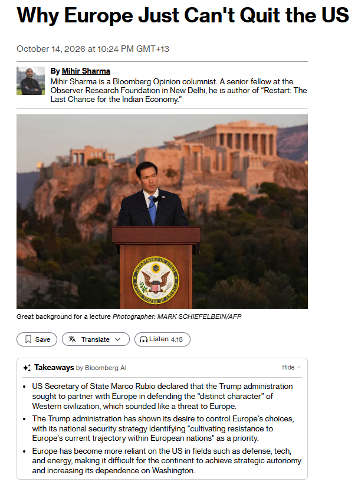
背景与关键数据
- 作者 Mihir Sharma：彭博观点专栏作家，印度观察者研究基金会高级研究员——一个"第三方"视角看美欧关系。
- 军事依赖：美国对欧洲北约国家的拟议军售占其装备支出比重从 2019–21 年的 28% 升到 2022–24 年的 50% 以上。欧洲尤其缺"战略使能系统"（运输机、卫星通信、指挥控制、空中加油）——没有这些，欧洲军队连独立部署都做不到。
- 能源杠杆：特朗普本月威胁"不释放战略柴油储备就限制对欧化石燃料出口"。背景是帖 6 的中东危机推高油价，美国自己也缺柴油。
- 科技依赖：41% 欧盟企业高度依赖云服务，其中 70% 由美国企业（AWS、微软、谷歌）控制。
- 政治干预：美国《国家安全战略》明文把"在欧洲内部培育抵制当前轨迹的力量"列为优先事项；美国副总统公开支持德国选择党等右翼势力。
图片解读
彭博观点文章头图：鲁比奥在雅典帕特农神庙前的讲台上演讲（图注讽刺："做演讲的好背景"）。AI 摘要三要点：(1) 鲁比奥宣称要与欧洲共同捍卫西方文明的"独特特征"，听起来像威胁；(2) 美国国家安全战略把"培育抵制欧洲当前轨迹的力量"列为优先；(3) 欧洲在国防、科技、能源上更依赖美国，难以实现战略自主。
为什么重要 / 对市场和经济的含义
- 对欧洲资产：战略自主意味着大规模国防、能源、数字基础设施投资（欧盟 8,000 亿欧元"重新武装欧洲"计划），利好欧洲军工（莱茵金属、赛峰）、电网设备；但财政压力会推高欧债收益率。
- 对中国：欧洲被美国挤压时，对华态度会更矛盾——既想用中国制衡（帖 9 对欧出口 +25%），又怕被美国惩罚（对华电动车关税）。
- 更深层：这是"单极世界的代价"——盟友也要交保护费（台湾、韩国的 LNG 大单，帖 6，是同一逻辑）。
延伸知识
- 德拉吉报告（2024）：前欧央行行长德拉吉应欧委会之邀撰写的《欧洲竞争力的未来》，核心论点是欧盟每年需要 7,500–8,000 亿欧元额外投资（相当于 GDP 的 4.5%，超过马歇尔计划）才能跟上美中，否则"慢性痛苦"。文中"剔除科技行业欧美生产率增长相同"就出自该报告。
- 战略使能系统（Strategic Enablers）：北约术语，指让一支军队能够独立作战的"后台能力"——战略空运、空中加油、情报监视侦察（ISR）、卫星通信、压制敌方防空。欧洲各国有不少坦克和战斗机，但这些"后台"几乎全靠美国，所以离开美国就打不了仗。
帖 16 · 18:12 · 彭博：港元逼近弱方兑换保证，金管局干预可能推高 HIBOR
美联储加息预期 → 美元走强 → 港元被卖到 7.85 弱方 → 金管局买港元抽流动性 → 香港利率（HIBOR）被迫跟涨——这是联系汇率制下香港的"宿命"，而这次缓冲垫只有 540 亿港元，非常薄。读全文收起
帖子原文
bloomberg： 随着港元汇率逼近交易区间的弱方边界，策略师认为，香港金管局为捍卫汇率而采取的干预措施，可能加剧借贷成本的波动风险。目前银行间现金储备已经接近历史低位。由于美国国债收益率上升，交易员更加倾向于持有美元，而不是港元。港元汇率因而逐渐逼近每美元 7.75 至 7.85 港元交易区间的弱方边界。为了防止港元跌破 7.85 的弱方兑换保证水平，香港金融管理局会买入港元。这种操作将抽走银行同业市场中的港元资金，减少一项被称为"银行体系总结余"（Aggregate Balance）的流动性缓冲。流动性减少，会推高银行同业拆借成本，使交易员做空港元的吸引力下降。然而，根据彭博对香港金管局数据的分析，银行体系总结余已经下降至 540 亿港元，约合 69 亿美元。自 2023 年以来，只有一次在金管局积极进行汇率干预期间，这项指标曾跌破当前水平。策略师认为，当流动性缓冲如此薄弱时，即使金管局仅进行小规模干预，也可能引发香港本地借贷利率的急剧上涨。香港金管局已经提醒公众，在置业、投资和借贷活动中，应当妥善管理利率风险。摩根士丹利分析师指出，虽然银行体系总结余下降，让市场重新想起 2022—2023 年美联储激进加息时期的经历，但香港目前更广泛的流动性缓冲，应该能够限制冲击。当时，美联储持续加息，香港金管局多次干预汇率，推动 HIBOR 及按揭融资成本上升。 #金融#
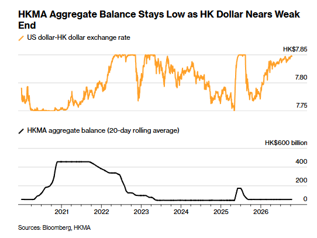
背景与关键数据
- 联系汇率制：港元 1983 年起与美元挂钩，2005 年起设定 7.75（强方）–7.85（弱方）区间。金管局承诺在 7.85 无限量买入港元、在 7.75 无限量卖出港元。
- 银行体系总结余（Aggregate Balance）：所有银行在金管局的结算账户余额之和，相当于香港银行体系的"基础货币"。金管局买港元 = 从这个池子里抽水。
- 540 亿港元：2021 年高峰时是 4,000 多亿。2022–23 年美联储加息期间被抽到接近 0，当时 1 个月 HIBOR 从 0.2% 飙到 5% 以上，按揭利率跟着涨，楼市下跌。
- 逻辑链：美债收益率升（帖 2）→ 套利者借港元买美元（赚利差）→ 港元贬到 7.85 → 金管局被动买港元 → 总结余下降 → HIBOR 上升 → 利差消失，套利停止。整个过程中香港的利率被迫跟随美国，不管香港经济需不需要。
图片解读
上图：美元/港元汇率（2020–2026），橙线在 7.75–7.85 区间内来回。2021 年初在 7.75 强方、2022–23 年贴着 7.85 弱方、2024 年回到中间、2025 年 5 月曾触及 7.75（当时大量资金涌入港股 IPO）、2025 年下半年又贴 7.85、2026 年再次逼近 7.85。下图：总结余 20 日均值，2021–22 年约 4,000 亿港元，2022 年底被抽到接近 0，2025 年中因资金流入短暂升到 1,700 亿，现在回落到约 540 亿。
为什么重要 / 对市场和经济的含义
- 对港股：HIBOR 上升直接压制港股估值（尤其高股息股和地产股），也抬高融资打新成本。叠加帖 20 中金的基本面分析，港股面临"基本面 + 流动性"双杀。
- 对香港楼市：按揭利率随 HIBOR 上升，2022–23 年香港楼价跌了约 25%，这次缓冲更薄，风险不小。
- 对内地：港股是内地企业最重要的离岸融资市场，港元流动性收紧会影响 IPO 和再融资窗口。
延伸知识
- 不可能三角（蒙代尔三角）：固定汇率、资本自由流动、独立货币政策三者只能取二。香港选了前两个，放弃了独立货币政策——所以美联储加息，香港必须跟，哪怕本地经济在衰退。内地选的是固定汇率（有管理）+ 独立货币政策，放弃了资本自由流动（外汇管制）。
- 2022–23 年的先例：美联储从 0 加到 5.25%，金管局在 2022 年 5 月至 2023 年 2 月累计买入约 2,900 亿港元，总结余从 3,400 亿抽到 450 亿，1 个月 HIBOR 从 0.2% 升至 5.3%。当时摩根士丹利等预计"香港撑得住"，结果确实撑住了，但楼市和零售付出了代价。
帖 17 · 18:16 · 彭博：美国社保信托基金 2032 年耗尽，没人敢碰
六年后美国社保基金见底，到时养老金自动打 78 折；解决办法只有加税、减福利、或者加赤字三选一，但老年人是投票率最高的群体，所以没有政客敢在选举年讨论。读全文收起
帖子原文
bloomberg： 根据美国社保管理委员会 2026 年的精算预测，负责退休与遗属福利的信托基金将在 2032 年第四季度耗尽储备。如果国会不采取行动，届时持续流入的资金只能支付原定福利的 78%，相当于存在 22% 的支付缺口。然而，竞选期间，很少有候选人认真讨论这一问题。即使被直接问及，不少人也只是给出一些模糊而空泛的表态。美国必须在削减福利、提高税收，以及允许社会保障体系进一步增加联邦政府财政赤字之间作出取舍。具体如何组合，有无数种方案。其中还有一些方式能够改变削减福利的表面形式，例如把提高退休年龄包装成制度改革，而不是直接宣布减少养老金。但是，等待越久，未来需要承受的调整就越痛苦。政治人物并不喜欢讨论这些问题。周三，美国社会保障署宣布，数千万领取社会保障福利的美国人，明年将获得 3.6% 的生活成本调整（COLA）。这是四年来最大的一次调整。对于许多受益人来说，这可能是他们全年收到的最重要的财务信息。为什么政治人物不敢碰养老金？任何支持削减养老金的候选人，都可能激怒一个投票非常积极的群体。根据美国人口普查局的数据，65 岁及以上美国人的投票率明显高于其他一些年龄群体，在国会中期选举中尤其如此。2022 年，65 岁以上选民贡献了全部投票数的 30%。随着更多婴儿潮一代进入这一年龄段，该群体在选票中的占比可能进一步增加。而那些已经缴纳几十年社会保障税、即将退休的中年选民，同样不愿意听到自己的养老金可能缩水。截至报道时，特朗普尚未提出解决社会保障制度长期资金缺口的全面计划。 #其他国家经济#
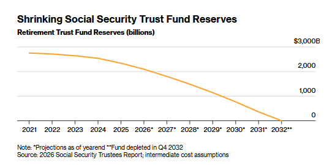
背景与关键数据
- OASI 信托基金：老年和遗属保险（Old-Age and Survivors Insurance），美国社保的主体。它的钱来自工资税（雇主雇员各 6.2%），多年累积了约 2.7 万亿美元储备。但婴儿潮退休后支出 > 收入，储备在被持续消耗。
- 2032 年四季度耗尽：比去年的预测又提前（2025 年报告说 2033 年）。耗尽后不是"不发"，而是只能发当年收进来的工资税，约等于原定福利的 78%。
- COLA 3.6%：社保金每年按 CPI 调整。3.6% 是四年来最大——通胀（帖 2）在这里以"福利上调"的形式回到财政支出上，加速基金耗尽。
- 65 岁以上贡献 30% 选票：这就是"银发政治"的威力。
图片解读
彭博图表"社保信托基金储备萎缩"：退休信托基金储备（十亿美元）从 2021 年约 2.7 万亿开始缓慢下降，2024 年后加速（曲线变陡），2026 年起为预测值（星号），2032 年归零（双星号标注"2032 年四季度耗尽"）。基于 2026 年受托人报告的中性成本假设。
为什么重要 / 对市场和经济的含义
- 对美债：社保缺口最终大概率由联邦财政兜底 → 更多国债发行 → 长端利率的结构性上行压力。这和帖 2 的周期性加息叠加，是"高利率更久"的长期背景。
- 对美国政治：中期选举前没人谈，但 2028 年大选前必须谈，到时方案无非是提高退休年龄（现在 67 岁）、提高工资税上限（目前 17.6 万美元以上收入不缴）、或削减高收入者的福利。
- 与中国对照：帖 18 IMF 报告讨论的是中国社保"太薄"导致预防性储蓄过高；美国的问题是社保"承诺太多"兑现不了。两边都是人口老龄化下的财政难题，方向相反。
延伸知识
- 现收现付制 vs 积累制：美国社保是现收现付（今天工作的人交税养今天的退休者），人口结构一变就出问题——1960 年 5 个工作者养 1 个退休者，现在是 2.7 个，2035 年 2.3 个。积累制（如新加坡公积金、美国 401k）每人存自己的，没有代际转移问题，但对低收入者保障不足。
- 1983 年格林斯潘委员会：上一次社保濒临耗尽是 1983 年，里根和民主党众议院议长奥尼尔达成两党妥协：逐步提高退休年龄（65→67）、对部分社保福利征税、提高工资税率。这被视为两党合作解决长期问题的典范，但在今天的政治环境下几乎不可复制。
帖 18 · 18:49 · 中财绿金院：后发优势与后发劣势——读 IMF 报告的一把钥匙
这篇文章用 2002 年林毅夫与杨小凯的"后发优势 vs 后发劣势"之争来解读 IMF 最新的中国报告：技术追赶的红利用完了，接下来的增长取决于"生产关系"（分配机制、要素市场、法治）能否改善——而这是慢功夫。读全文收起
帖子原文
中财绿金院： 后发优势与后发劣势 #经济数据#
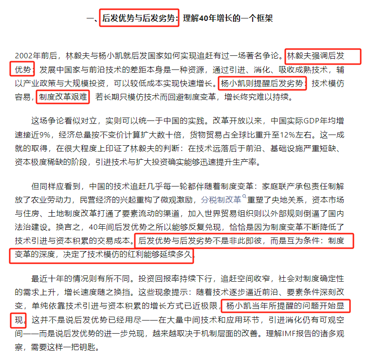
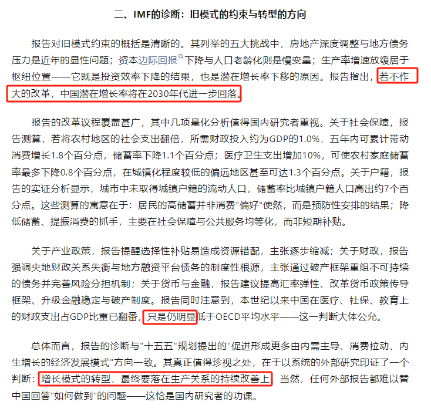
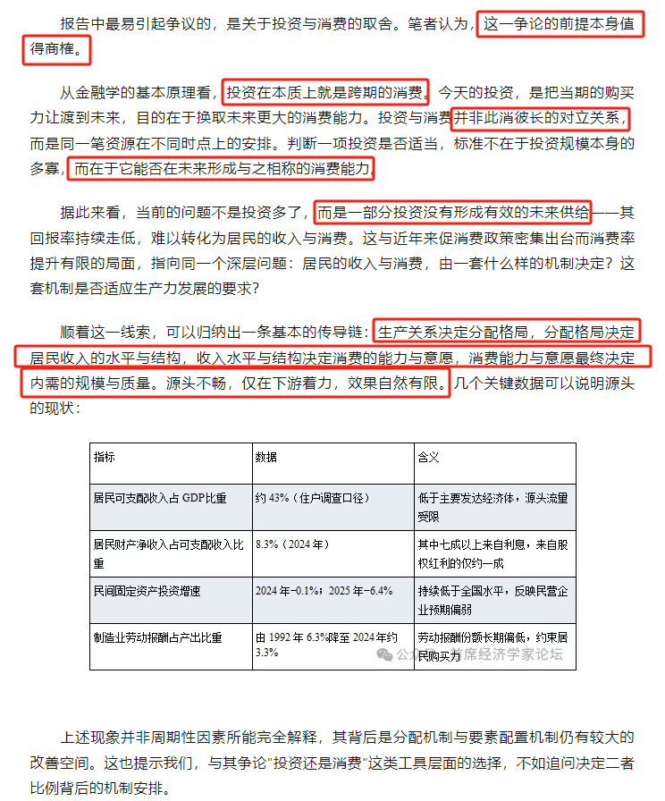
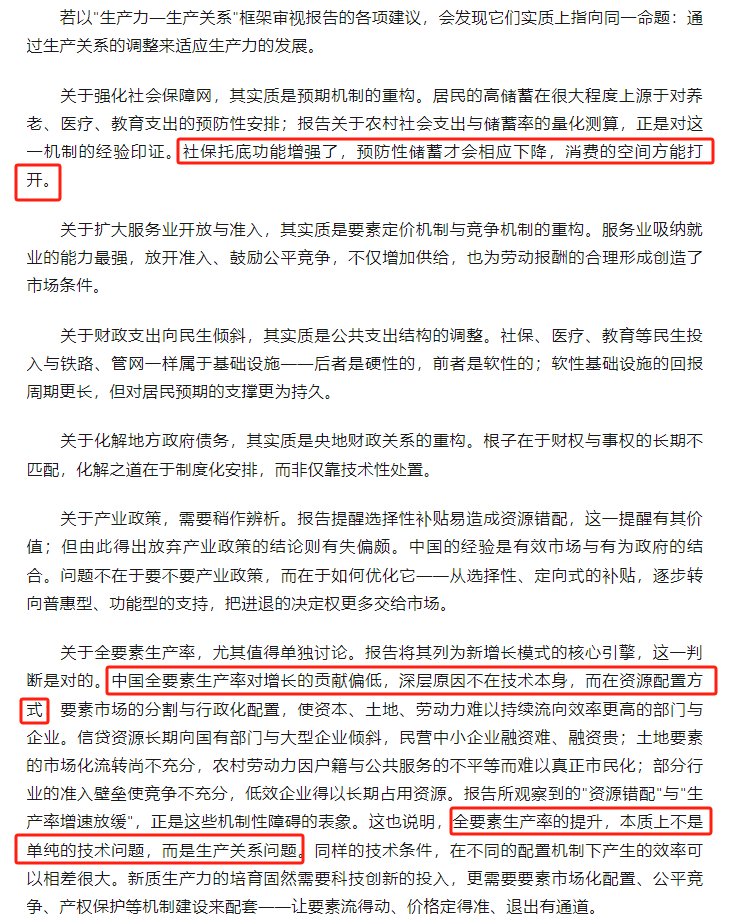
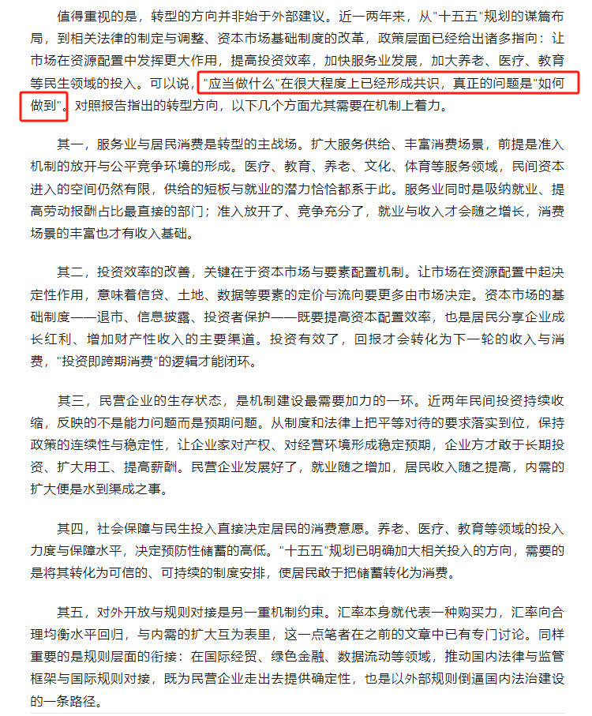
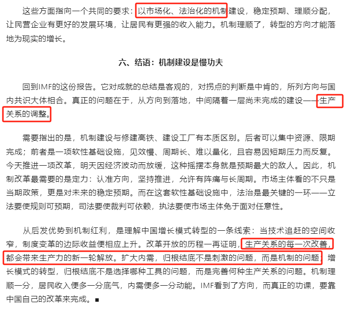
背景与关键数据
- 林毅夫 vs 杨小凯（2002）：林毅夫主张"后发优势"——发展中国家可以低成本引进成熟技术，靠产业政策和大规模投资快速追赶；杨小凯警告"后发劣势"——技术模仿容易、制度改革艰难，只模仿技术回避制度变革，增长终究难以持续。
- 40 年的验证：改革开放以来中国实际 GDP 年均增速近 9%，货物贸易全球占比升至 12%，印证了林毅夫；但每一轮追赶都伴随制度变革（家庭联产承包、分税制、加入 WTO、住房土地改革），说明制度变革才是技术红利能持续的前提——两者"互为条件"。
- 最近十年：投资回报率持续下行、追赶空间收窄，"杨小凯当年提醒的问题开始显现"。
- IMF 的五大挑战：房地产深度调整、地方债务压力、资本回报率下降、人口老龄化、生产率增速放缓（居于枢纽位置）。结论：若不作大的改革，中国潜在增长率将在 2030 年代进一步回落。
- IMF 的量化测算：农村社会支出翻倍需要财政投入约 GDP 的 1.0%，五年内带动消费增长 1.8 个百分点、储蓄率下降 1.1 个百分点；医疗支出增加 10%，农村家庭储蓄率最多下降 0.8 个百分点（偏远地区 1.3）；城市中未取得城镇户籍的流动人口储蓄率比有户籍者高出 7 个百分点。含义：高储蓄不是"偏好"，是预防性安排。
- 文章的核心表格（源头现状）：
- 居民可支配收入占 GDP 比重：约 43%（住户调查口径），低于主要发达经济体
- 居民财产净收入占可支配收入比重：8.3%（2024 年），其中七成以上来自利息，股权红利仅一成
- 民间固定资产投资增速：2024 年 -0.1%，2025 年 -6.4%
- 制造业劳动报酬占产出比重：1992 年 6.3% → 2024 年约 3.3%
- 传导链：生产关系决定分配格局 → 分配格局决定居民收入的水平与结构 → 收入决定消费能力与意愿 → 消费决定内需规模与质量。"源头不畅，仅在下游着力，效果自然有限。"
图片解读
- 图 1（一、后发优势与后发劣势）：框架部分，红框标出林毅夫 / 杨小凯的核心观点、"制度改革艰难"、"后发优势与后发劣势不是非此即彼而是互为条件"、"杨小凯当年提醒的问题开始显现"。
- 图 2（二、IMF 的诊断）：五大挑战、"若不作大的改革……2030 年代进一步回落"、社保与户籍的量化测算、产业政策 / 财政 / 货币金融建议、"医疗社保教育财政支出占 GDP 比重翻番，只是仍明显低于 OECD 平均水平"、结论"增长模式的转型，最终要落在生产关系的持续改善上"。
- 图 3（投资 vs 消费之争）：红框——"这一争论的前提本身值得商榷""投资在本质上就是跨期的消费""并非此消彼长的对立关系""标准在于它能否在未来形成与之相称的消费能力""一部分投资没有形成有效的未来供给"，以及完整传导链和四项关键数据表格。
- 图 4（生产力—生产关系框架下看各项建议）："社保托底功能增强了，预防性储蓄才会相应下降，消费的空间方能打开"；服务业开放是要素定价与竞争机制的重构；地方债根子在财权事权不匹配；产业政策从选择性转向普惠型；"中国全要素生产率对增长的贡献偏低，深层原因不在技术本身，而在资源配置方式"——信贷向国有和大企业倾斜、土地要素流转不充分、户籍限制劳动力市民化、准入壁垒保护低效企业。"全要素生产率的提升，本质上不是单纯的技术问题，而是生产关系问题。"
- 图 5（五个着力方向）："应当做什么"已形成共识，真正的问题是"如何做到"。其一，服务业与居民消费是主战场（医疗教育养老文化体育放开准入）；其二，投资效率靠资本市场与要素配置机制（退市、信息披露、投资者保护）；其三，民营企业的生存状态——"近两年民间投资持续收缩，反映的不是能力问题而是预期问题"；其四，社保与民生投入决定消费意愿；其五，对外开放与规则对接，汇率向合理均衡水平回归。
- 图 6（六、结语：机制建设是慢功夫）：机制建设与修高铁、建工厂有本质区别——后者可以集中资源限期完成，前者是软性基础设施，见效慢、周期长、难以量化、容易因短期压力而反复。法治是最关键的一环。"生产关系的每一次改善，都会带来生产力的新一轮解放。扩大内需，归根结底不是刺激的问题，而是机制的问题。"
为什么重要 / 对市场和经济的含义
- 这是今天所有中国宏观帖子的"理论总纲"：帖 1 的信贷塌方、帖 20 的港股跑输、帖 23 的居民去杠杆，都是"收入分配机制 → 消费能力"这条链的下游表现。文章的意思是，光靠降息、消费补贴（下游）解决不了问题。
- "民间投资 2025 年 -6.4%"和"反映的不是能力问题而是预期问题"是关键判断：民营企业家不投资，不是没钱，是对产权保护和政策稳定性没信心。
- 对投资者的含义：如果文章的判断成立，中国资产的重估需要等"机制性改革"（户籍、社保、要素市场化、法治）落地，而不是等某次刺激——这是以年计的时间尺度。
延伸知识
- 全要素生产率（TFP）：GDP 增长中不能被资本和劳动投入解释的部分，通常理解为"技术进步 + 效率改善"。中国 TFP 增速从 2000 年代的 3–4% 降到 2010 年代后期的 1% 左右。文章的观点是：同样的技术，在不同的配置机制下效率可以相差很大——所以 TFP 低不是技术问题，是资源配置（谁能拿到贷款、土地、牌照）的问题。
- 预防性储蓄（Precautionary Saving）：因为对未来的不确定（生病、失业、养老）而多存钱。中国居民储蓄率约 35%，远高于发达国家的 5–15%。IMF 的测算证明：社保每多覆盖一点，储蓄率就降一点——这是"消费刺激"最根本的抓手，但见效需要若干年。
帖 19 · 18:52 · 另一个世界里的博弈：河南城投非标降息兑付
河南部分城投非标（定融、短拆）逾期后，投资人开始接受把原本 24%–30% 的年化利息降到 12% 以换取本金尽快偿还——但文章提醒：降息不等于平台就有钱还本。读全文收起
帖子原文
另一个世界里的博弈 #TAX#
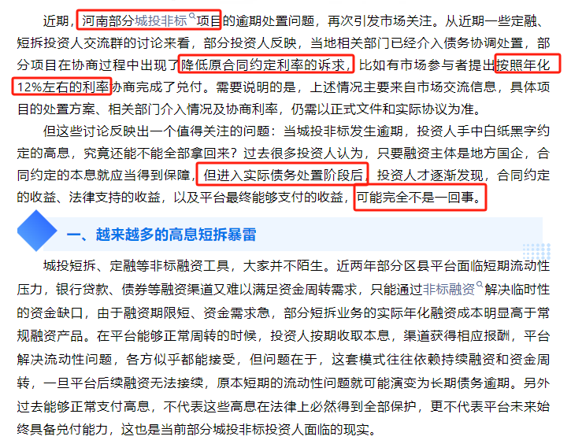
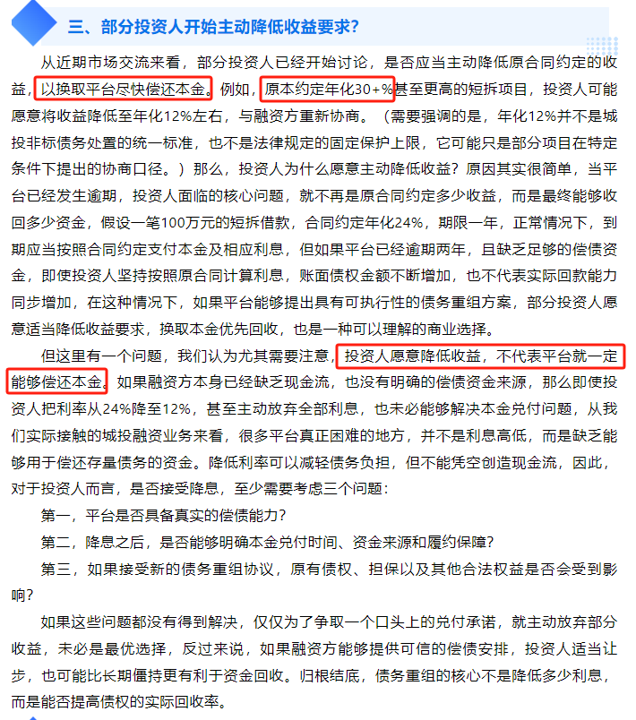
背景与关键数据
- 城投非标：地方政府融资平台（城投公司）通过非标准化渠道融资——定融（定向融资计划）、短拆（短期拆借）、信托等。它们不在债券市场公开发行，利率高（年化 10%–30%）、期限短、法律保护弱。
- 逾期的机制：平台靠"借新还旧"维持周转，一旦后续融资接不上，短期流动性问题就变成长期债务逾期。
- "降息兑付"：市场传闻河南部分项目在相关部门介入协调下，按年化 12% 左右的利率协商完成兑付（原约定可能 30% 以上）。文章强调这只是市场交流信息，非统一标准、非法定上限。
- 投资人为什么愿意降：平台已逾期两年，继续按合同算利息，账面债权越滚越大但收不回来；接受重组换本金优先回收是理性选择。
- 文章提醒的三个问题：(1) 平台是否具备真实的偿债能力？(2) 降息后能否明确本金兑付时间、资金来源和履约保障？(3) 接受新协议后，原有债权、担保等合法权益是否受影响？"债务重组的核心不是降低多少利息，而是能否提高债权的实际回收率。"
图片解读
- 图 1：文章开头，红框标注"河南部分城投非标项目的逾期处置""降低原合同约定利率的诉求""按照年化 12% 左右的利率协商完成了兑付""但进入实际债务处置阶段后，投资人才逐渐发现，合同约定的收益、法律支持的收益，以及平台最终能够支付的收益，可能完全不是一回事"。小标题"一、越来越多的高息短拆暴雷"。
- 图 2：小标题"三、部分投资人开始主动降低收益要求？"，红框标注"以换取平台尽快偿还本金""原本约定年化 30%+""投资人愿意降低收益，不代表平台就一定能够偿还本金"。文中举例：100 万元借款、年化 24%、逾期两年。
为什么重要 / 对市场和经济的含义
- Jason 把它归到 #TAX# 系列并命名"另一个世界里的博弈"，意思是：在公开债券市场（城投债"零违约"信仰还在）之外，非标市场已经在真实地发生违约、减记和重组。这是帖 18 中 IMF 说的"通过破产框架重组不可持续的债务"的民间版本。
- 对地方财政：非标降息兑付是"软违约"，说明化债资源（置换债额度）优先保公开债，非标投资人承担损失。
- 对理财投资者：高收益城投非标的"刚兑"时代已结束，12% 可能成为新的协商基准，但本金回收才是核心风险。
延伸知识
- 隐性债务化解（"化债"）：2024 年 11 月中央批准 10 万亿元化债方案（6 万亿置换债额度 + 4 万亿专项债），用低息、长期的地方政府债券置换高息、短期的隐性债务。但置换额度有限，非标往往排在最后——这就是"公开债刚兑、非标打折"的分层。帖 1 JPM 图中"调整化债置换后的贷款增速"就是在修正这个置换对数据的扰动。
- 债务重组的"净现值"思维：对债权人来说，关键不是名义利率，而是预期回收金额的现值。年化 30% 但永远收不回 vs 年化 12% 但两年内本金回收，后者现值更高。文章说的"提高实际回收率"就是这个意思。
帖 20 · 18:58 · 中金：恒生科技年内跌 23.9% 全球垫底，根源是内需与居民信用
全球股市大牛市（韩国 +57%、日本 +37%、标普 +14%）中，恒生科技跌 23.9% 垫底、两年几乎回到 924 起点；中金的解释是：居民信用脉冲走弱 + "增收不增利"，日本失去三十年的三轮"假牛市"是最好的参照。读全文收起
帖子原文
中金： 尽管今年以来的全球市场都呈现巨大的分化和波动，但港股尤其是恒生科技的持续跑输依然显得尤为"扎眼"，恒科年初以来累积下跌 23.9%，在全球范围内落后。如果从去年 10 月高点算起，更是下跌近 40%。一个或许被忽略的事实是：时隔两年，恒生科技距离被视作本轮牛市起点的 2024 年 924 一度仅有不到 4% 的空间，两年之后几乎又回到了"原点"。 回望去年底，市场整体还弥漫着普遍的乐观情绪，诸多叙事言犹在耳：居民存款搬家、资产负债表修复、财富效应后的再通胀预期、A 股"开门红"后港股接棒、人民币升值推动外资流入并受益港股等，不一而足。但我们并不认同当时的主流观点，并一直持谨慎看法：港股今年大幅跑输的根源，本质是内需基本面和居民信用脉冲走弱的折射，这一点如果没有变化，港股更多体现的仍是赔率价值。 日本在"失去的三十年"里也有三轮规模可观的牛市，但每次持续一年左右就结束了，每次都始于财政刺激、也终于财政收缩。财政刺激能带来阶段性反弹，但如果深层次矛盾没有化解（如居民资产负债表修复与化债），一旦政策刺激消退，行情就很难维系，因此这三轮"牛市"放到长周期看没能逆转趋势，更像是"大的箱体震荡"，这与港股过去两年的表现何其相似。 除了中港股恒科自身特殊的结构因素和资金面外，从总量上还有两层原因：一是美国的名义增长更高（美国 2025 年名义 GDP 增速约 5% vs. 中国名义 GDP 增速 4%）；二是名义增长（收入）向实际利润（盈利）的传导，这其中则包含了利润率与周转率的差异。经济总量扩张、出口增长和产业景气度提升，并不必然意味着上市公司利润同步增长，如果 1）过于激烈甚至非理性的竞争导致利润率下降，则会"增收不增利"；2）不考虑回报的过度投资会拉低周转率并增加杠杆，即便账面利润增长，也会挤占现金流，最终影响资本回报。即便通过大量新增投资短期可能带来利润抬升，但如果持续依赖加杠杆和低回报的产能扩张，最终资本回报率反而可能下降。低效产能出清偏慢，导致供给增长快于需求，不仅加剧价格竞争，也降低了既有资产的使用效率，应收账款回收周期拉长、存货周转放缓。例如，制造业应收账款平均回款周期已拉长至 70 天以上，产成品库存周转天数也升至 21 天，回款周期拉长、营运资本占用上升。中国非金融上市企业盈利能力与美股公司的系统性差距，MSCI 中国的 ROE 明显低于美股，利润率的差异解释了大部分 ROE 的不同，资产周转率也普遍偏低，而这又可以归因于中美在一次分配中要素资源配置的效率（金融资源的分配机制）、二次分配中税收的差异、全球价值链中所处位置、行业集中度等方面的不同。 #股市#
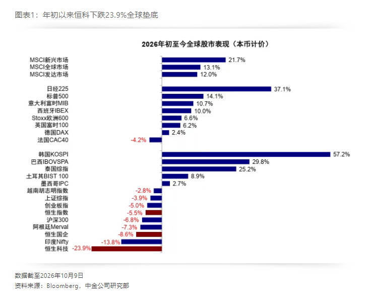
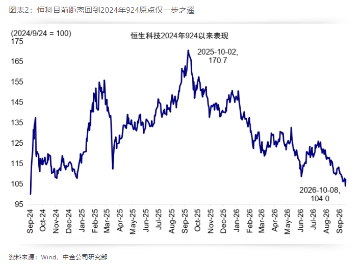
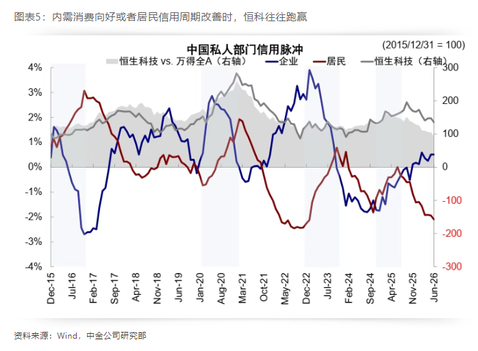
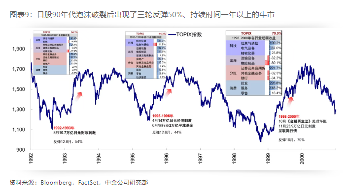
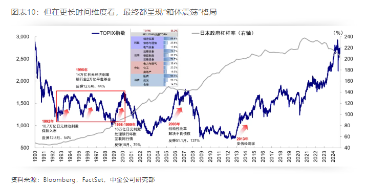
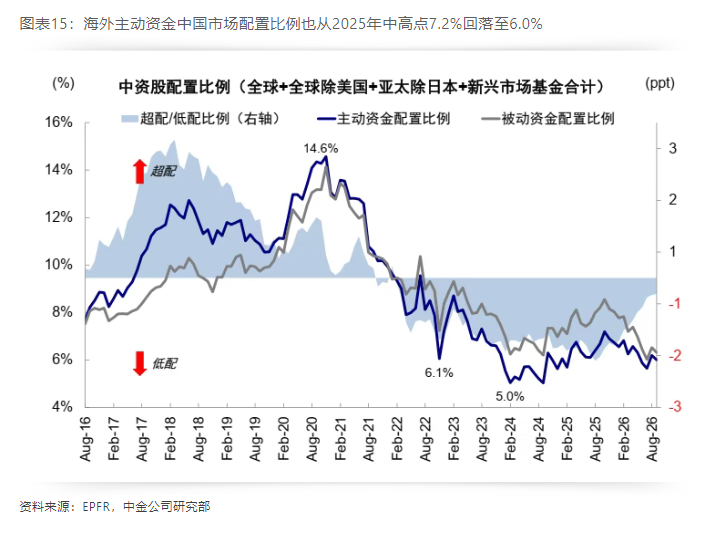
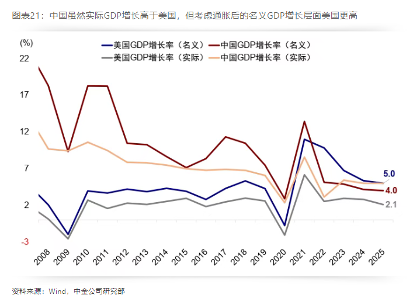
背景与关键数据
- 恒科 -23.9%（年初至 10/9）、从 2025 年 10 月高点 -40%：924 指 2024 年 9 月 24 日政策组合拳（降息降准、股市互换便利）启动的行情起点。
- 去年底的乐观叙事全部落空：存款搬家、资产负债表修复、财富效应、人民币升值引外资——中金当时就不认同。
- "赔率价值"vs"胜率价值"：赔率 = 跌多了反弹空间大（便宜）；胜率 = 基本面向好、趋势可持续。中金说港股只有赔率价值——便宜，但没有上涨的理由。
- 美国名义 GDP 5% vs 中国 4%：虽然中国实际增速（约 5%）高于美国（2.1%），但加上通胀后美国名义增速更高。企业收入和利润跟的是名义增速，所以美股盈利增长更快。
- ROE 差距的杜邦分解：ROE = 利润率 × 资产周转率 × 杠杆。中国企业利润率低（价格战，帖 8）、周转率低（过度投资、应收账款 70 天以上、库存周转 21 天），只能靠杠杆撑。
图片解读
- 图表 1（2026 年初至今全球主要股指表现，本币计价，截至 10/9）：韩国 KOSPI +57.2%、日经 225 +37.1%、巴西 +29.8%、泰国 +25.2%、MSCI 新兴 +21.7%、标普 500 +14.1%、MSCI 全球 +13.1%、MSCI 发达 +12.0%……负数区：越南 -2.8%、上证 -3.9%、法国 CAC -4.2%、创业板 -5.0%、恒生指数 -5.5%、沪深 300 -6.8%、阿根廷 -7.3%、恒生国企 -8.6%、印度 Nifty -13.8%、恒生科技 -23.9%（深红柱，全球最差）。中国的三个港股指数全在最底部。
- 图表 2（恒生科技 2024-9-24=100）：2025 年 10 月 2 日高点 170.7，2026 年 10 月 8 日 104.0。两年一个完整的"过山车"。
- 图表 5（中国私人部门信用脉冲 vs 恒科相对表现，2015 年底=100）：深蓝是企业信用脉冲，深红是居民信用脉冲，灰线是恒科相对万得全 A 的比值（右轴），灰色阴影是恒科跑赢的时期（2016–17、2020、2024 年底–2025 年上半年）。规律：居民信用脉冲向上时恒科跑赢。2026 年居民信用脉冲持续在 -2% 以下且还在下行，恒科相对走弱。
- 图表 9（日本 1990 年代 TOPIX 三轮反弹）：1992–93 年 10.7 万亿日元财政刺激后反弹 12.8 个月、+54%；1995–96 年 14 万亿日元经济刺激 + 2 万亿银行基金后反弹 12.6 个月、+44%；1998–2000 年《金融再生法》处理坏账 + 23.9 万亿刺激 + 互联网行情后反弹 16 个月、+79%。每轮都是财政刺激启动、财政收缩结束。各轮领涨行业（右上小表）：1998–2000 信息与通信 +190%、电气设备 +87%、精密仪器 +83%，而银行 -34%、零售 +18%。
- 图表 10（TOPIX 1990–2024 与日本政府杠杆率）：三轮反弹（红框）在更长周期里只是 1,000–1,700 点的箱体震荡；日本政府杠杆率（右轴）从 60% 一路升到 240%；真正的趋势逆转发生在 2003 年（结构性改革、处理不良债权）和 2013 年（安倍经济学）之后。
- 图表 15（海外主动资金中资股配置比例，EPFR）：主动资金配置比例从 2020 年高点 14.6% 降到 2024 年低点 5.0%，2025 年中反弹到 7.2%，现在回落到 6.0%；被动资金（灰线）约 6.5%；超配/低配（浅蓝面积，右轴）2021 年后持续低配约 2 个百分点。外资并没有大规模回流。
- 图表 21（中美名义 / 实际 GDP 增速，2008–2025）：中国名义（深红）从 2010 年 18% 降到 2025 年 4.0%；中国实际（橙）约 5%；美国名义（深蓝）2025 年 5.0%；美国实际（灰）2.1%。2023 年起中国名义增速低于美国名义增速——这是"中国实际增速高、企业盈利却不如美国"的宏观解释。
为什么重要 / 对市场和经济的含义
- 这是对"港股牛市"叙事最系统的否定：没有居民信用扩张（帖 1、帖 23），港股就只有估值反弹、没有盈利驱动。
- 日本类比的操作含义：每轮财政刺激启动时可以参与（12–16 个月、+44% 到 +79%），但要在政策退坡时离场；不要把反弹当趋势反转。真正的反转需要坏账处理（2003）或体制性改革（2013）。
- 与帖 18 呼应：中金把 ROE 差距归因于"一次分配的要素配置效率、二次分配的税收差异"——与中财绿金院的"生产关系"框架完全一致。两家机构从不同角度得出同一结论。
- 对投资者：MSCI 中国 ROE 系统性低于美股，所以"便宜"是常态而非机会，除非利润率或周转率出现结构性改善（反内卷见效、产能出清）。
延伸知识
- 名义 GDP 与企业盈利：企业的收入、利润都是名义值。一个国家实际增长 5%、通缩 1%，名义只有 4%；另一个实际增长 2%、通胀 3%，名义 5%——后者企业更容易涨价、涨利润。这也是为什么通缩对股市的伤害远大于对 GDP 数字的伤害。
- 财政刺激的"糖"与"药"：日本经验表明，财政刺激是止痛糖，能撑 12–16 个月的行情；处理坏账、出清僵尸企业、改革分配机制是苦药，见效慢但能逆转趋势。中国 2024 年 924 以来的政策多属前者，市场在等后者。
帖 21 · 19:01 · 第一财经：城市轨道交通规划审批可能重新"开闸"
停滞近两年的城市地铁 / 轻轨新规划审批，可能在下半年恢复——但门槛更高了，只有财政和客流过硬的城市才能建。读全文收起
帖子原文
第一财经： 今年下半年，轨道交通规划审批可能将重新"开闸"。 #TAX#
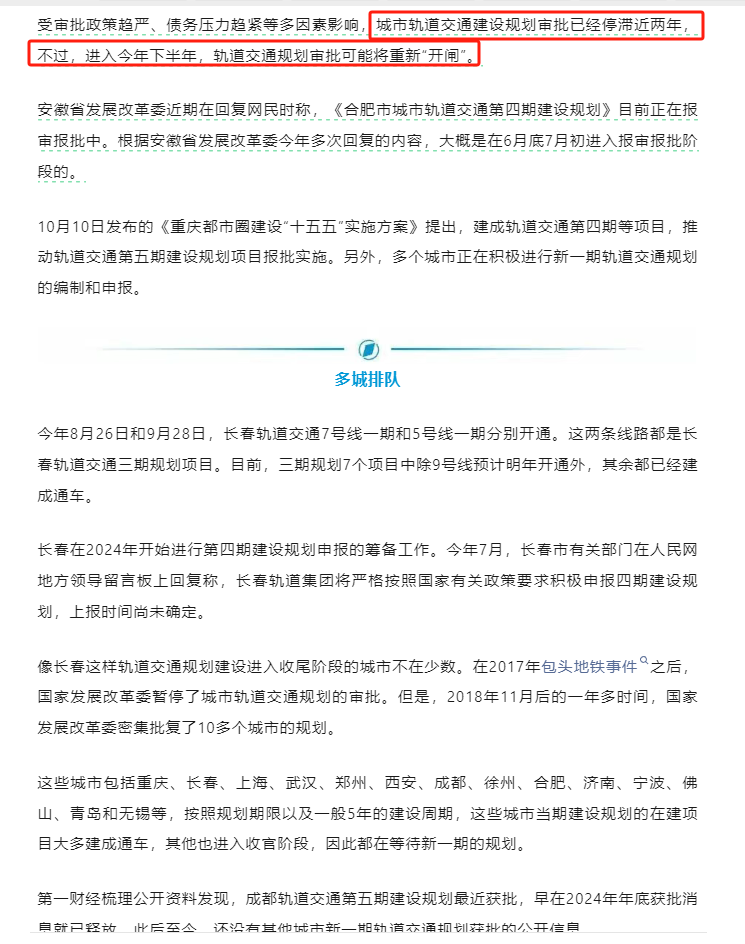
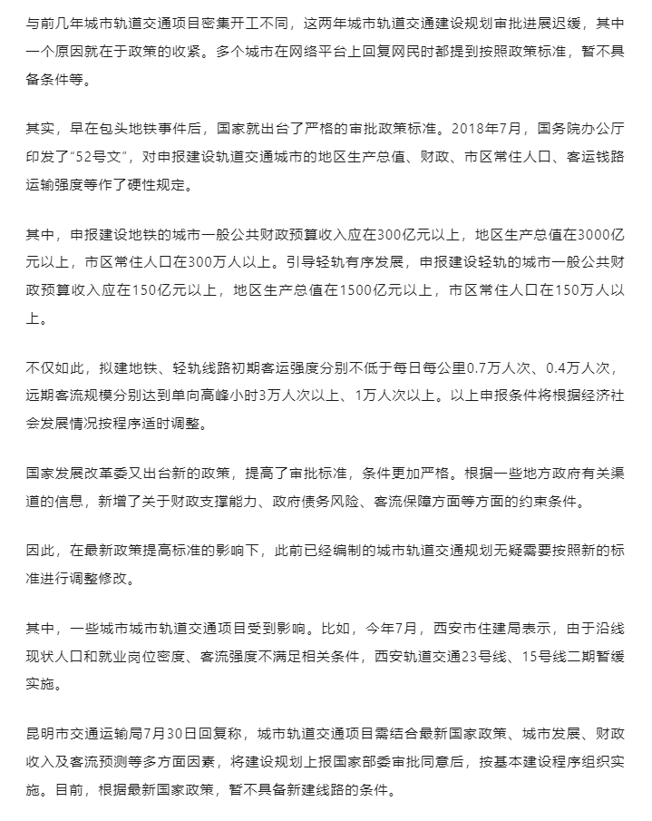
背景与关键数据
- 停滞近两年：受审批趋严、地方债务压力影响，国家发改委自 2024 年底成都五期之后几乎没批新规划。
- 排队城市：合肥四期（6 月底 7 月初报审）、长春四期（7 月回复将申报）、重庆四期 / 五期（10 月 10 日"十五五"实施方案提出）等。2018 年 11 月后一年多发改委曾密集批复 10 多个城市（重庆、长春、上海、武汉、郑州、西安、成都、徐州、合肥、济南、宁波、佛山、青岛、无锡），按 5 年建设周期现在大多收尾，都在等新一期。
- 2018 年"52 号文"门槛：申报地铁的城市需一般公共预算收入 300 亿以上、GDP 3,000 亿以上、市区常住人口 300 万以上；轻轨门槛减半（150 亿、1,500 亿、150 万）。客流强度：地铁初期不低于每日每公里 0.7 万人次、轻轨 0.4 万人次。
- 新政策更严：新增财政支撑能力、政府债务风险、客流保障等约束。已有规划需按新标准调整。
- 受影响案例：西安 23 号线、15 号线二期因沿线人口和岗位密度、客流强度不达标暂缓；昆明"暂不具备新建线路的条件"。
- 2017 年包头事件：包头地铁开工后因财政承受能力不足被叫停，成为审批收紧的起点。
图片解读
- 图 1：文章开头，红框标注"城市轨道交通建设规划审批已经停滞近两年，不过进入今年下半年，轨道交通规划审批可能将重新'开闸'"。接着是安徽发改委关于合肥四期、重庆"十五五"实施方案、长春的申报进展，以及 2017 年包头事件后发改委暂停审批、2018 年 11 月后密集批复 10 多个城市的历史回顾。
- 图 2："52 号文"的具体门槛（财政收入、GDP、人口、客流强度）、发改委新政策增加的约束条件（财政支撑能力、政府债务风险、客流保障），以及西安、昆明的具体案例。
为什么重要 / 对市场和经济的含义
- Jason 归到 #TAX# 系列：轨交是地方政府最大的基建投资项目之一（一条地铁线动辄数百亿），审批重启意味着中央在"化债"与"稳增长"之间的天平向后者微调——但只对财政好的城市开闸，实质是"分化"而非"放水"。
- 对相关行业：中国中车、中铁 / 中铁建、信号系统（交控科技）、盾构机等受益，但规模远不及 2018–2022 年那一轮。
- 对地方财政：地铁运营几乎全部亏损（只有少数几个城市经营性现金流为正），新建意味着未来数十年的财政补贴负担——这也是为什么新门槛加入"财政支撑能力"。
延伸知识
- 基建投资的乘数效应与挤出效应：基建短期拉动 GDP（乘数），但如果靠举债且项目回报率低于利率，长期会挤占其他支出（挤出）。帖 18 IMF 报告说的"一部分投资没有形成有效的未来供给"，地铁就是典型例子——有客流的线路是"有效供给"，没客流的是"无效投资"。
- 包头事件（2017）：包头地铁一期 2017 年 7 月开工，8 月被国务院叫停，原因是财政收入（不足 300 亿）撑不起 300 多亿的项目。此后发改委重订标准，是"地方债约束硬化"的标志性事件。
帖 22 · 19:04 · 国联民生：美元指数逼近 103，历史上这是风险资产的危险关口
美元指数 103 是历史上两次"出事"的起点（2000 年科网泡沫、2022 年英国养老金危机），现在又到了这个位置。读全文收起
帖子原文
国联民生： 全球紧缩定价同步强化的宏观背景之下，美元指数升至 102 上方并逼近 103，从历史上看，103 的点位时常也伴随着风险资产调整的关口，其后续演绎值得密切跟踪。2000 年初美元指数突破 103，至 2002 年 1 月升至约 118 至 120 的峰值区域，难以"刹车"的强美元成为科网泡沫阶段高位的同步指标。2022 年 4 月 DXY 升破 103，9 月升至 114，其后伴随英国养老金 LDI 危机与日本 1998 年以来首次汇市干预。过强的美元不一定仅仅是汇率问题，同样可能是外部危机的重要催化。 #金融#
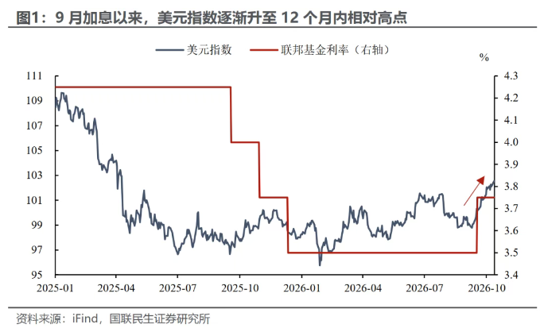
背景与关键数据
- 美元指数（DXY）：美元对六种主要货币（欧元 57.6%、日元 13.6%、英镑 11.9%、加元、瑞典克朗、瑞士法郎）的加权指数。103 不是什么技术位，但历史上两次突破 103 后都继续冲高并伴随危机。
- 2000 年：DXY 突破 103 后升到 118–120，同期纳斯达克泡沫破裂。
- 2022 年：4 月破 103，9 月冲到 114，英国养老金 LDI（负债驱动投资）策略因英债暴跌爆仓，英国央行紧急救市；日本 24 年来首次干预汇市买日元。
- "全球紧缩定价同步强化"：不只是美联储，台湾（帖 4）、其他央行也在加息预期中。
图片解读
国联民生图 1（2025-01 到 2026-10）：深蓝线是美元指数（左轴），红线是联邦基金利率（右轴，目标区间下限）。美元指数从 2025 年 1 月的约 110 一路跌到 2026 年 1 月的低点约 96，之后震荡回升到 100 附近，2026 年 9 月加息后（红线从 3.50 跳到 3.75）加速上行到 103 附近（红色箭头）——12 个月内的相对高点。联邦基金利率的阶梯：2025 年 9 月、10 月、12 月三次降息后在 3.50–3.75 区间停留了 9 个月，2026 年 9 月首次加息到 3.75–4.00。
为什么重要 / 对市场和经济的含义
- 强美元 = 全球美元流动性收紧 = 新兴市场和高杠杆机构的压力测试。2022 年的教训是，危机往往先在"意想不到的角落"爆发（英国养老金），而不是在新兴市场。
- 当前的"薄弱环节"候选：香港联系汇率（帖 16，总结余只剩 540 亿）、日元（如果日本央行不跟进加息）、新兴市场美元债、以及 AI 板块高杠杆的私募信贷。
- 对中国：美元强 → 人民币贬值压力 → 央行要在"稳汇率"和"降息稳增长"之间取舍，可能限制降息空间。
延伸知识
- 美元微笑理论（Dollar Smile）：美元在两种情况下走强——美国经济一枝独秀（微笑右端）和全球避险（微笑左端），只在全球同步复苏时走弱（微笑中间）。现在美元走强属于右端（美国加息）向左端（地缘危机避险）过渡的阶段，两个因素叠加时最危险。
- 英国 LDI 危机（2022 年 9 月）：英国养老金为对冲利率风险大量使用杠杆化的利率互换和长期国债，特拉斯政府减税方案引发英债暴跌，养老金被追加保证金，被迫抛售国债，形成"抛售 → 跌 → 追保 → 再抛售"的死亡螺旋，英国央行紧急购债才止住。它说明高利率环境下，"安全资产 + 杠杆"的组合可以瞬间变成危机源。
帖 23 · 20:02 · 自制图表：居民部门净新增债务史上首次转负，消费贷与社零同步下行
Jason 用央行数据自己画的两张图，是今天所有中国宏观帖子的"底牌"：2026 年前 9 个月中国居民部门净新增债务是负的（2008 年以来首次），9 月居民短期消费贷同比 -13%，社零增速只剩 3%。读全文收起
帖子原文
#自制图表#
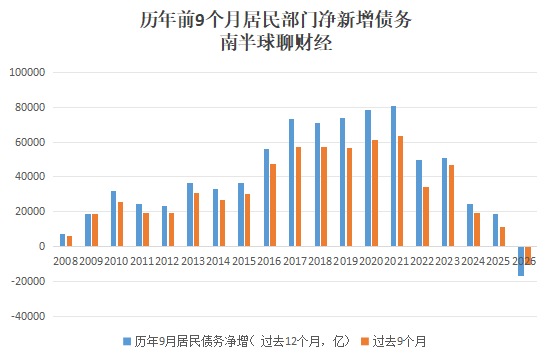
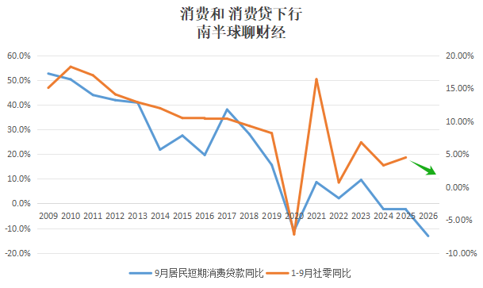
背景与关键数据
- 居民部门净新增债务：居民贷款余额的变化量（新借的减去还掉的）。为负意味着居民整体在"净还钱"——这就是帖 1 JPM 说的"居民新增贷款为零"在更长时间窗口上的表现。
- 历史对比：2008 年前 9 月约 5,000 亿；2016–2021 年每年 5–6.5 万亿（房地产加杠杆高峰）；2022 年腰斩到 3.4 万亿；2023 年 4.6 万亿；2024 年 1.9 万亿；2025 年 1 万亿；2026 年约 -3,000 亿。
- 居民短期消费贷同比 -13%：这是信用卡、消费贷、车贷等的存量增速。2009–2013 年在 40%–50%，2019 年降到个位数，2020 年疫情转负后短暂反弹，2024 年以来持续为负并加速下行。
- 1–9 月社零同比约 3%：社会消费品零售总额增速。2010 年 18%，2019 年 8%，2023 年反弹到 7%，2025 年约 2.6%，2026 年略回升到 3%——Jason 用绿色箭头标注，但在消费贷大幅收缩的背景下，这个"回升"很可能是价格因素（帖 3 CPI 0.9%、能源涨价）而非实际消费量增加。
图片解读
- 图 1（历年前 9 个月居民部门净新增债务，亿元）：蓝柱是"过去 12 个月"口径（9 月同比的存量变化），橙柱是"过去 9 个月"口径（年初至 9 月）。两个口径走势一致：2008–2015 年逐年抬升到 3–3.5 万亿，2016 年跳到 5 万亿以上，2017–2021 年维持 5.7–6.4 万亿（橙）/7–8 万亿（蓝），2022 年骤降，2024 年起断崖式下跌，2026 年两个口径都是负值（蓝约 -1.5 万亿，橙约 -3,000 亿）。18 年的图上第一次出现负柱。
- 图 2（消费和消费贷下行，2009–2026）：蓝线（左轴）是 9 月居民短期消费贷款同比，从 2009 年约 52% 单边下行到 2026 年约 -13%；橙线（右轴）是 1–9 月社零同比，从 2010 年约 18% 降到 2026 年约 3%。两条线长期趋势高度一致，2020 年同时跳水，2021 年同时反弹，2024 年后蓝线跌幅明显快于橙线——消费贷萎缩快于消费本身，说明居民在"用储蓄消费而非借钱消费"。
为什么重要 / 对市场和经济的含义
- 这是资产负债表衰退的教科书信号：居民部门作为整体在净偿债，不管利率降到多低。帖 1（JPM）、帖 5（摩根士丹利"去杠杆陷阱"）、帖 18（预防性储蓄）、帖 20（中金居民信用脉冲）说的都是这件事，Jason 用自己的图把它量化了。
- 对消费股：社零 3% 中还含价格因素，实际消费量增长接近零。
- 对政策：如果居民不借钱，货币政策（降息）的传导就断了，只剩财政直接给钱（消费补贴、社保）一条路——这正是帖 18 IMF 报告的建议方向，也是帖 20 中金"日本三轮牛市都靠财政"的含义。
- Jason 选择在一天的最后发这两张图，可以理解为他对今天所有卖方报告的"总结陈词"。
延伸知识
- 资产负债表衰退（Balance Sheet Recession）：野村辜朝明用来解释日本 1990 年代的理论——资产价格崩盘后，企业和家庭的目标从"利润最大化"变成"债务最小化"，不管利率多低都只还债不借钱，货币政策失效，只有财政支出能填补需求缺口。中国现在的居民部门（房价下跌后）正在呈现这个特征。
- 社零 vs 实际消费：社零是名义值（含价格），而且只覆盖商品和餐饮，不含服务消费（教育、医疗、旅游）。更完整的指标是"居民人均消费支出"（住户调查）或 GDP 中的"最终消费支出"。读社零时要同时看 CPI——社零 3%、CPI 0.9%，实际增速约 2%。
今日全图索引
| 帖号 | 时间（美西） | 主题 | 标签 | 图片文件名 |
|---|---|---|---|---|
| 帖 1 | 10-14 12:08 | JPM：中国 9 月信贷靠政府，居民新增贷款为零，贷款增速 4.8% 新低 | #金融# | post1_img1.png |
| 帖 2 | 10-14 12:34 | 彭博：美国 9 月 CPI 3.7%，加息预期升温，金价跌破 4100、芯片股抛售 | #金融# | post2_img1.png, post2_img2.png, post2_img3.png, post2_img4.png, post2_img5.png |
| 帖 3 | 10-14 12:37 | 财通：中国 CPI 0.9%、PPI 5%，剪刀差 4.1 走扩 | #经济数据# | post3_img1.png |
| 帖 4 | 10-14 12:48 | 摩根士丹利：台湾 2026 GDP 增长 11.5%，四十年最高 | #经济数据# | post4_img1.png |
| 帖 5 | 10-14 12:53 | 摩根士丹利：中国通胀回升是幻象，输入型通胀 2027 年重回通缩 | #经济数据# | post5_img1.png |
| 帖 6 | 10-14 12:58 | ZeroHedge：霍尔木兹两船沉没、胡塞袭沙特、格陵兰勘探、台湾买阿拉斯加 LNG | #其他国家经济# | post6_img1.png, post6_img2.png, post6_img3.png, post6_img4.png, post6_img5.png, post6_img6.png, post6_img7.png |
| 帖 7 | 10-14 13:03 | 彭博：赞比亚铜出口部分用人民币结算 | #金融# | post7_img1.png |
| 帖 8 | 10-14 13:08 | 南风窗：内卷变负卷 | #经济数据# | post8_img1.png |
| 帖 9 | 10-14 13:13 | JPM：中国 9 月出口超预期，全年顺差或达 1.4 万亿美元 | #经济数据# | post9_img1.png, post9_img2.png |
| 帖 10 | 10-14 13:33 | 花旗：核心 CPI 0.33%，10 月暂停、12 月加息 | #其他国家经济# | post10_img1.png |
| 帖 11 | 10-14 14:01 | 财新：2027 国考招录 35,691 人，税务占 67% | #TAX# | post11_img1.jpg, post11_img2.jpg |
| 帖 12 | 10-14 16:04 | 八卦：扒系列相关人员"喝茶" | #八卦# | （无图） |
| 帖 13 | 10-14 16:50 | Robin Brooks：出口是中国唯一引擎，前 9 月顺差 9,400 亿美元 | #经济数据# | post13_img1.png |
| 帖 14 | 10-14 17:59 | 中金：生产资料-生活资料剪刀差扩至 6.6，中下游利润挤压待显现 | #经济数据# | post14_img1.png |
| 帖 15 | 10-14 18:09 | 彭博观点：为什么欧洲戒不掉美国 | #其他国家经济# | post15_img1.png |
| 帖 16 | 10-14 18:12 | 彭博：港元逼近 7.85 弱方，总结余仅 540 亿，HIBOR 或急升 | #金融# | post16_img1.png |
| 帖 17 | 10-14 18:16 | 彭博：美国社保信托基金 2032 年耗尽，COLA 3.6% | #其他国家经济# | post17_img1.png |
| 帖 18 | 10-14 18:49 | 中财绿金院：后发优势与后发劣势——解读 IMF 中国报告 | #经济数据# | post18_img1.png, post18_img2.png, post18_img3.png, post18_img4.png, post18_img5.png, post18_img6.png |
| 帖 19 | 10-14 18:52 | 另一个世界里的博弈：河南城投非标降息至 12% 兑付 | #TAX# | post19_img1.png, post19_img2.png |
| 帖 20 | 10-14 18:58 | 中金：恒科年内 -23.9% 全球垫底，根源是居民信用脉冲与增收不增利 | #股市# | post20_img1.png, post20_img2.png, post20_img3.png, post20_img4.png, post20_img5.png, post20_img6.png, post20_img7.png |
| 帖 21 | 10-14 19:01 | 第一财经：城市轨交规划审批下半年或重新"开闸" | #TAX# | post21_img1.png, post21_img2.png |
| 帖 22 | 10-14 19:04 | 国联民生：美元指数逼近 103，历史上的风险资产关口 | #金融# | post22_img1.png |
| 帖 23 | 10-14 20:02 | 自制图表：居民部门前 9 月净新增债务史上首次转负，消费贷 -13% | #自制图表# | post23_img1.png, post23_img2.png |